北非 国家／地区地图 · 看轮廓与邻近位置 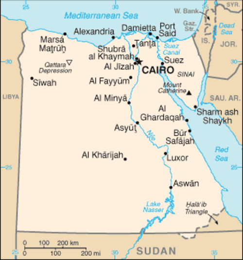
非洲位置图 · 看大洲方位 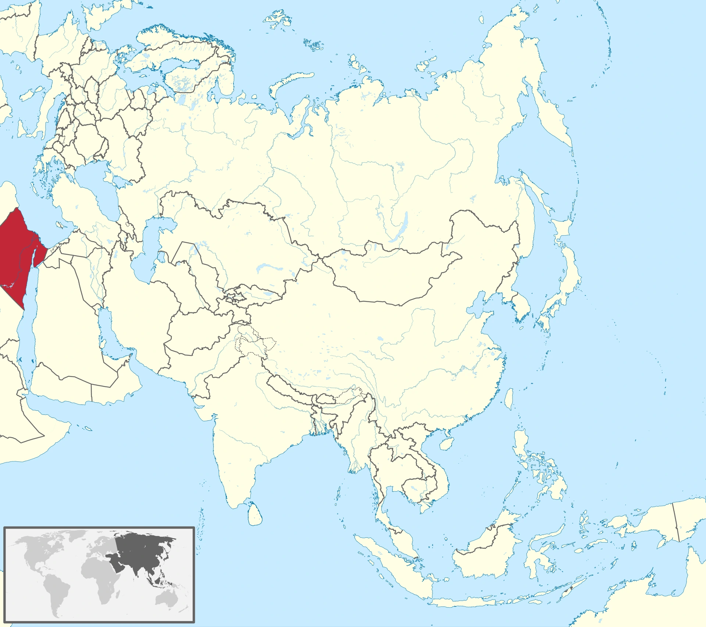
点击地图可放大 · 国家图可能只显示地形与边界，首都方位见下文；小岛位置图可能使用圆圈或插图提示。
认识国家／地区 埃及横跨非洲东北部与亚洲西奈半岛，地中海、红海和苏伊士运河把它放在重要航路交点。大片国土是沙漠，人口和农业主要沿尼罗河及其三角洲分布。
认识首都／城市 开罗位于尼罗河三角洲南端，是长期的政治与文化中心，吉萨金字塔群在其西侧。新行政首都在开罗以东，政府机构陆续迁入；阅读资料时要分清传统首都名称与新的行政办公地点。
记忆钩子 沿尼罗河北上，在三角洲入口找到开罗。
容易混淆 埃及归非洲；西奈半岛在亚洲。行政迁移另见说明。
本条资料来源与地图许可 国家地图：File:Egypt-CIA WFB Map.png
大洲位置图：File:Egypt in Africa (de-facto).svg CC BY-SA 3.0
国家／地区地图 · 看轮廓与邻近位置 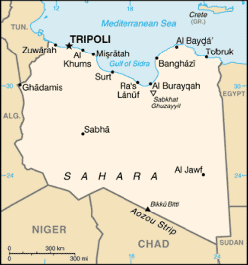
非洲位置图 · 看大洲方位 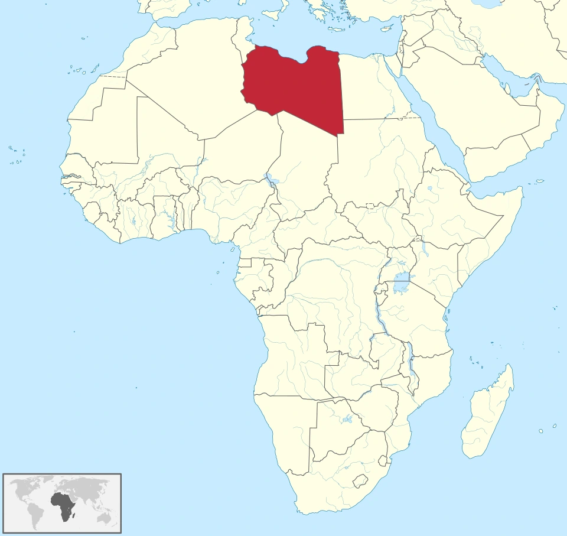
点击地图可放大 · 国家图可能只显示地形与边界，首都方位见下文；小岛位置图可能使用圆圈或插图提示。
认识国家／地区 利比亚位于北非地中海南岸，西邻突尼斯和阿尔及利亚，东邻埃及。内陆主要是撒哈拉沙漠，沿海地带聚集城市；石油资源深刻影响其经济结构。
认识首都／城市 的黎波里坐落在西部海岸，有古老港口和城墙内的老城。它的名称源于古代“三城”概念；把首都记在靠近突尼斯的一侧，可与东部重要城市班加西区分。
记忆钩子 利比亚西岸，的黎波里临海。
容易混淆 黎巴嫩也有名为的黎波里的城市，不能串国。
本条资料来源与地图许可 国家地图：File:Libya-CIA WFB Map.png
大洲位置图：File:Libya in Africa.svg CC BY-SA 3.0
国家／地区地图 · 看轮廓与邻近位置 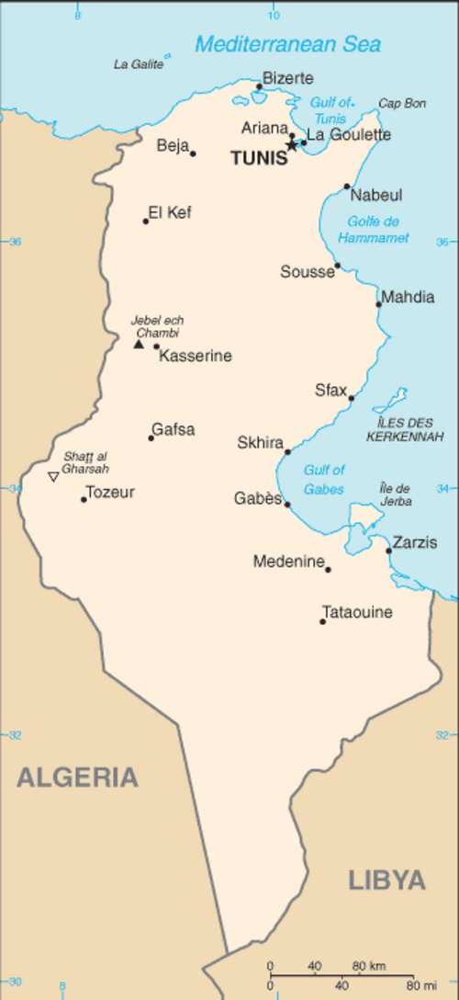
非洲位置图 · 看大洲方位 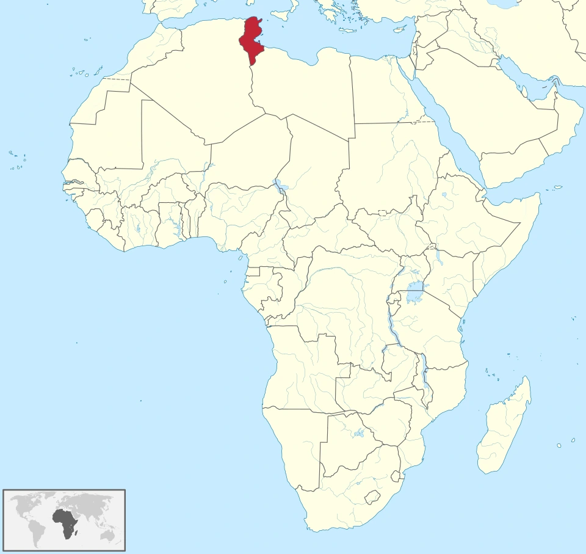
点击地图可放大 · 国家图可能只显示地形与边界，首都方位见下文；小岛位置图可能使用圆圈或插图提示。
认识国家／地区 突尼斯是北非较小的沿海国家，夹在阿尔及利亚与利比亚之间。北部受地中海气候影响，向南逐渐过渡到干旱地区；古代迦太基遗址体现其悠久海洋联系。
认识首都／城市 突尼斯市位于北部、靠近突尼斯湾，城市与国家中文名称相同。传统麦地那和附近迦太基遗址是认识它的两条历史线索：一条通向阿拉伯城市生活，一条通向古地中海文明。
记忆钩子 突尼斯的首都，就是突尼斯市。
容易混淆 国家同名首都；不要把古城迦太基当现首都。
本条资料来源与地图许可 国家地图：File:Tunisia-CIA WFB Map.png
大洲位置图：File:Tunisia in Africa.svg CC BY-SA 3.0
国家／地区地图 · 看轮廓与邻近位置 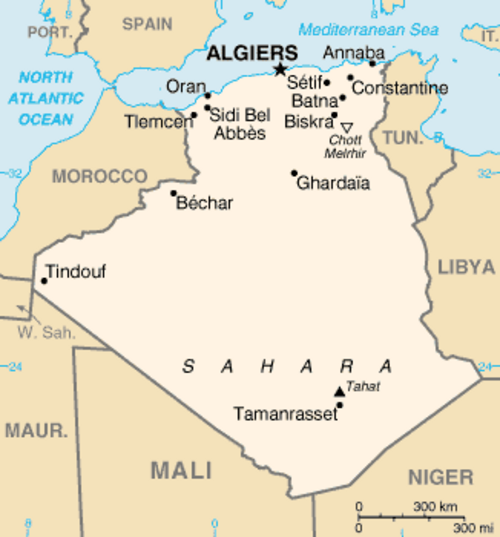
非洲位置图 · 看大洲方位 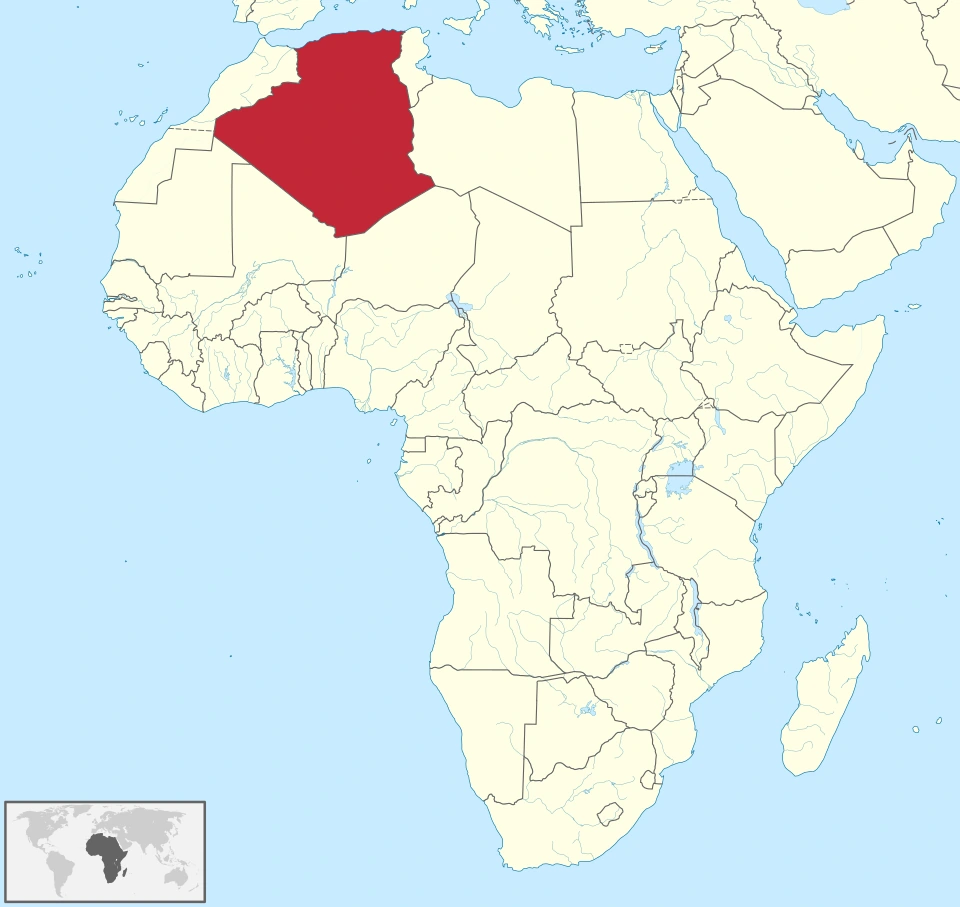
点击地图可放大 · 国家图可能只显示地形与边界，首都方位见下文；小岛位置图可能使用圆圈或插图提示。
认识国家／地区 阿尔及利亚位于北非，北临地中海，南部深入撒哈拉。它是非洲面积最大的国家，主要城市多在北部沿海和山地；阿特拉斯山脉与沙漠构成鲜明的南北差异。
认识首都／城市 阿尔及尔建在北部海湾旁，山坡上的白色建筑使它常被称为“白城”。老城卡斯巴保留了密集街巷，港口和行政区则展现现代城市功能；记忆时抓住“北岸白城”的形象。
记忆钩子 阿尔及利亚少一个“利亚”，首都是阿尔及尔。
容易混淆 国家名比首都名长，读音相似但不完全相同。
本条资料来源与地图许可 国家地图：File:Algeria-CIA WFB Map.png
大洲位置图：File:Algeria in Africa.svg CC BY-SA 3.0
国家／地区地图 · 看轮廓与邻近位置 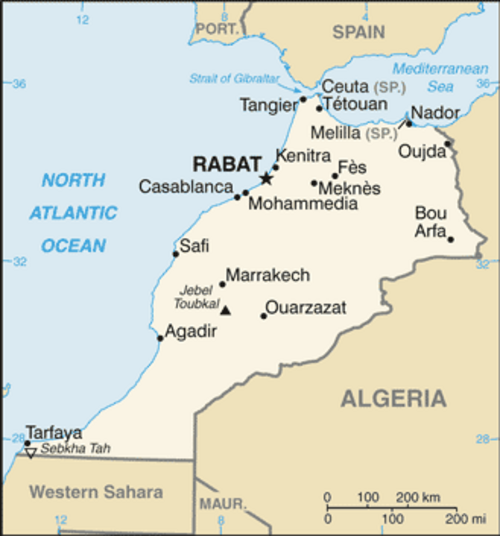
非洲位置图 · 看大洲方位 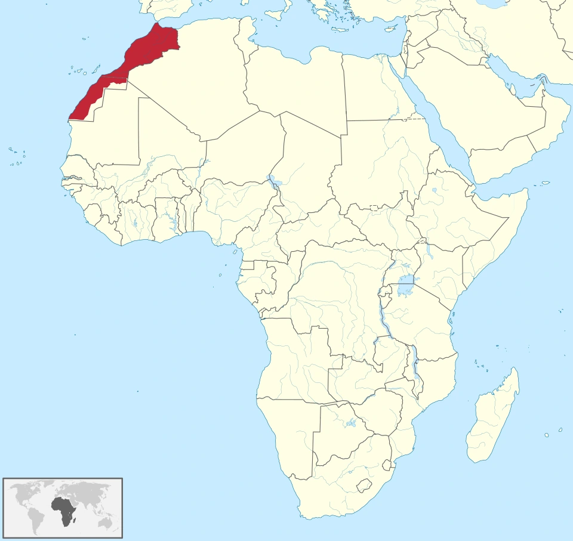
点击地图可放大 · 国家图可能只显示地形与边界，首都方位见下文；小岛位置图可能使用圆圈或插图提示。
认识国家／地区 摩洛哥位于非洲西北角，北望直布罗陀海峡，西临大西洋。阿特拉斯山脉贯穿内陆，沿海城市、山地聚落与干旱地区并存；涉及西撒哈拉的地图需结合图源说明阅读。
认识首都／城市 拉巴特在大西洋岸、布雷格雷格河入海口南侧，与萨累隔河相望。它是行政首都，王宫和政府机构集中于此；规模更大的卡萨布兰卡偏重商业，马拉喀什则以历史城区闻名。
记忆钩子 摩洛哥：王宫在拉巴特，商港是卡萨布兰卡。
容易混淆 卡萨布兰卡、马拉喀什都不是首都；边界涉及争议。
本条资料来源与地图许可 国家地图：File:Morocco-CIA WFB Map.png
大洲位置图：File:Morocco in Africa (de-facto).svg CC BY-SA 3.0
国家／地区地图 · 看轮廓与邻近位置 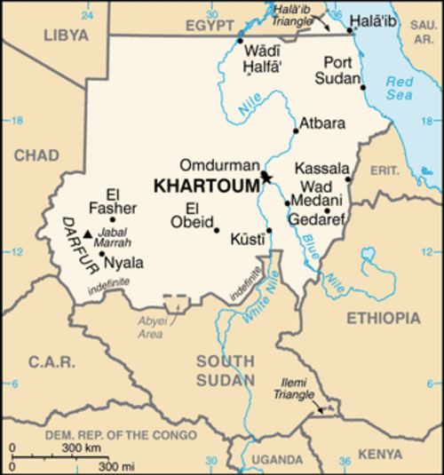
非洲位置图 · 看大洲方位 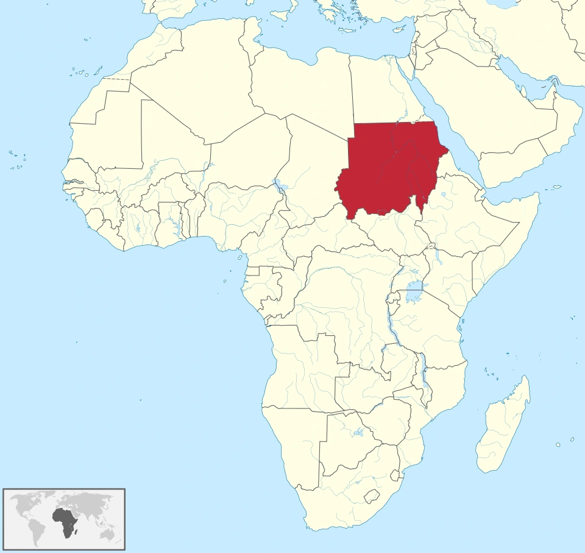
点击地图可放大 · 国家图可能只显示地形与边界，首都方位见下文；小岛位置图可能使用圆圈或插图提示。
认识国家／地区 苏丹位于非洲东北部，东临红海，国土横跨沙漠和萨赫勒地带。尼罗河贯穿其人口较集中的区域；2011年南苏丹独立后，两国必须分别学习。
认识首都／城市 喀土穆处于青尼罗河与白尼罗河汇合地带，与恩图曼、北喀土穆组成相连的城市群。河流交汇是最清晰的位置线索；冲突期间政府办公地点变化，不宜直接理解成正式迁都。
记忆钩子 两条尼罗河会合，想到喀土穆。
容易混淆 苏丹是喀土穆，南苏丹是朱巴；临时办公地点另辨。
本条资料来源与地图许可 国家地图：File:Sudan-CIA WFB Map.png
大洲位置图：File:Sudan in Africa (de-facto).svg CC BY-SA 4.0
西非 国家／地区地图 · 看轮廓与邻近位置 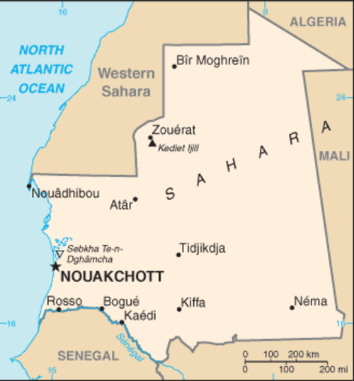
非洲位置图 · 看大洲方位 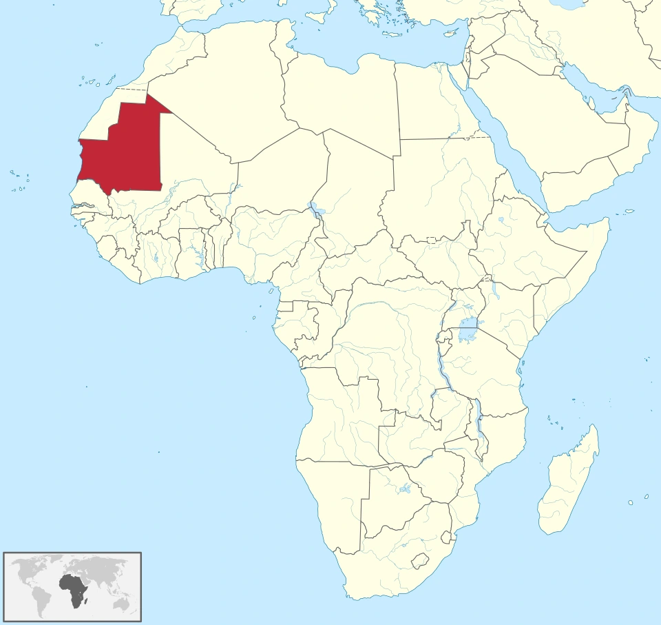
点击地图可放大 · 国家图可能只显示地形与边界，首都方位见下文；小岛位置图可能使用圆圈或插图提示。
认识国家／地区 毛里塔尼亚位于非洲西北部大西洋岸，北部沙漠广阔，南部接近塞内加尔河。它连接马格里布与西非，传统游牧生活和沿海渔业都是理解国家地理的线索。
认识首都／城市 努瓦克肖特靠近西部海岸，作为独立时期的行政中心发展起来。城市位于沙漠与海洋相遇的地带，快速扩展的街区与渔港并存；记忆首都可把“沙海之间的新城”作为画面。
记忆钩子 毛里塔尼亚长名字，配努瓦克肖特长名字。
容易混淆 毛里塔尼亚在非洲大陆，毛里求斯是印度洋岛国。
本条资料来源与地图许可 国家地图：File:Mauritania-CIA WFB Map.png
大洲位置图：File:Mauritania in Africa.svg CC BY-SA 3.0
国家／地区地图 · 看轮廓与邻近位置 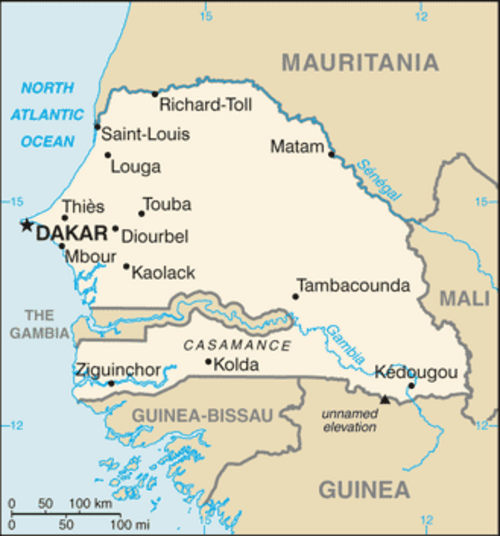
非洲位置图 · 看大洲方位 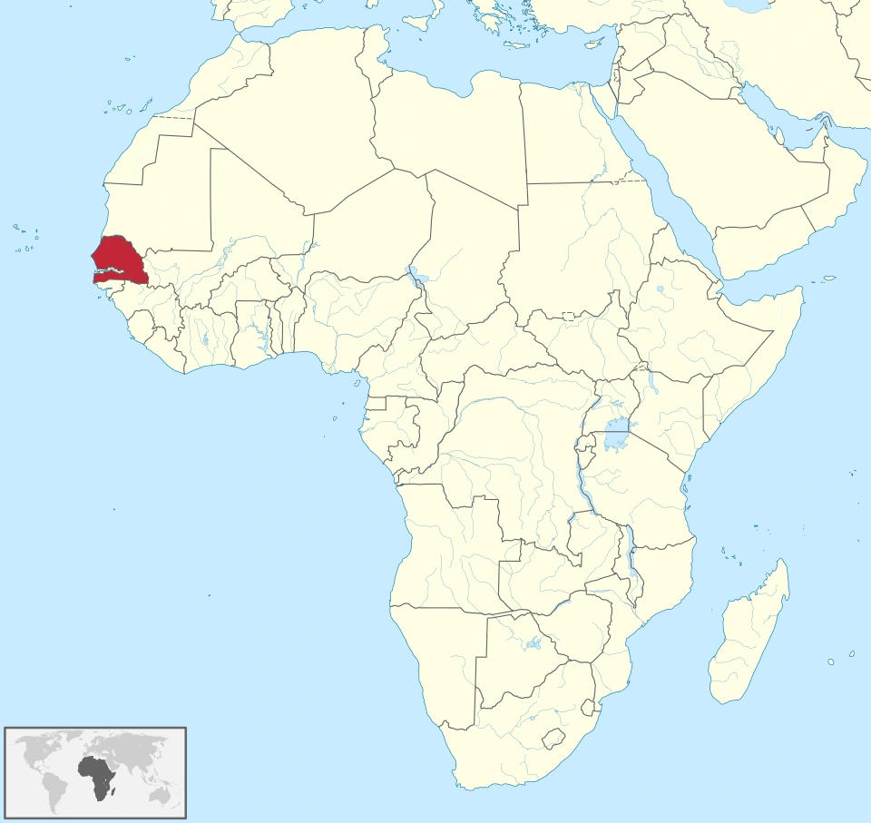
点击地图可放大 · 国家图可能只显示地形与边界，首都方位见下文；小岛位置图可能使用圆圈或插图提示。
认识国家／地区 塞内加尔位于西非大西洋岸，塞内加尔河构成其北部的重要地理边界。冈比亚狭长地伸入其国土，因此地图上会看到一道沿河的嵌入；首都所在半岛尤其突出。
认识首都／城市 达喀尔位于佛得角半岛，是非洲大陆最西端附近的重要港城。它面向大西洋，历史上连接欧洲、西非与美洲；附近戈雷岛的历史也让这座城市成为理解大西洋联系的入口。
记忆钩子 塞内加尔向西伸出半岛，尖端是达喀尔。
容易混淆 “达喀尔拉力赛”的名称不意味着比赛始终在此举行。
本条资料来源与地图许可 国家地图：File:Senegal-CIA WFB Map.png
大洲位置图：File:Senegal in Africa.svg CC BY-SA 3.0
国家／地区地图 · 看轮廓与邻近位置 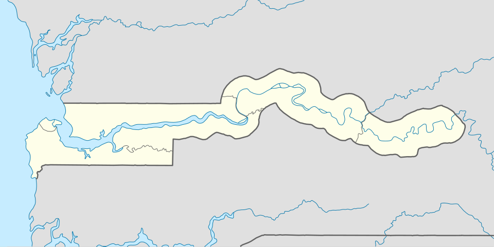
非洲位置图 · 看大洲方位 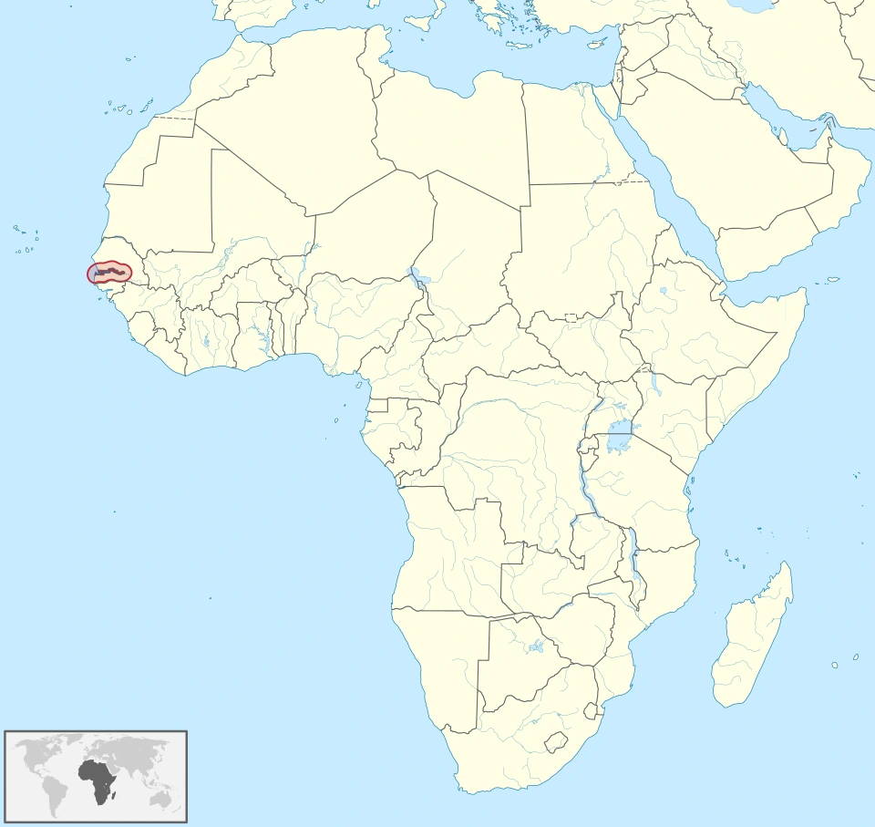
点击地图可放大 · 国家图可能只显示地形与边界，首都方位见下文；小岛位置图可能使用圆圈或插图提示。
认识国家／地区 冈比亚是西非沿冈比亚河延伸的狭长国家，除大西洋出口外，大部分周边与塞内加尔相接。河道决定国土形状，也解释了城市、交通和农业分布。
认识首都／城市 班珠尔位于冈比亚河入海口附近的圣玛丽岛，是行政首都和港口。更大的城市聚集区还包括塞雷昆达；把首都放在河口，而不是狭长国土的中部，能迅速定位。
记忆钩子 冈比亚像一条河带，班珠尔守河口。
容易混淆 班珠尔是首都，人口更大的塞雷昆达不是。
本条资料来源与地图许可 国家地图：File:Gambia location map.svg CC BY-SA 3.0
大洲位置图：File:Gambia in Africa.svg CC BY-SA 3.0
国家／地区地图 · 看轮廓与邻近位置 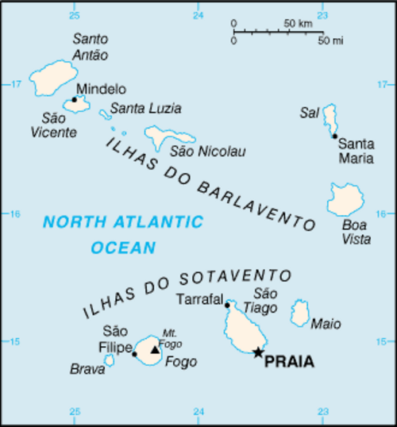
非洲位置图 · 看大洲方位 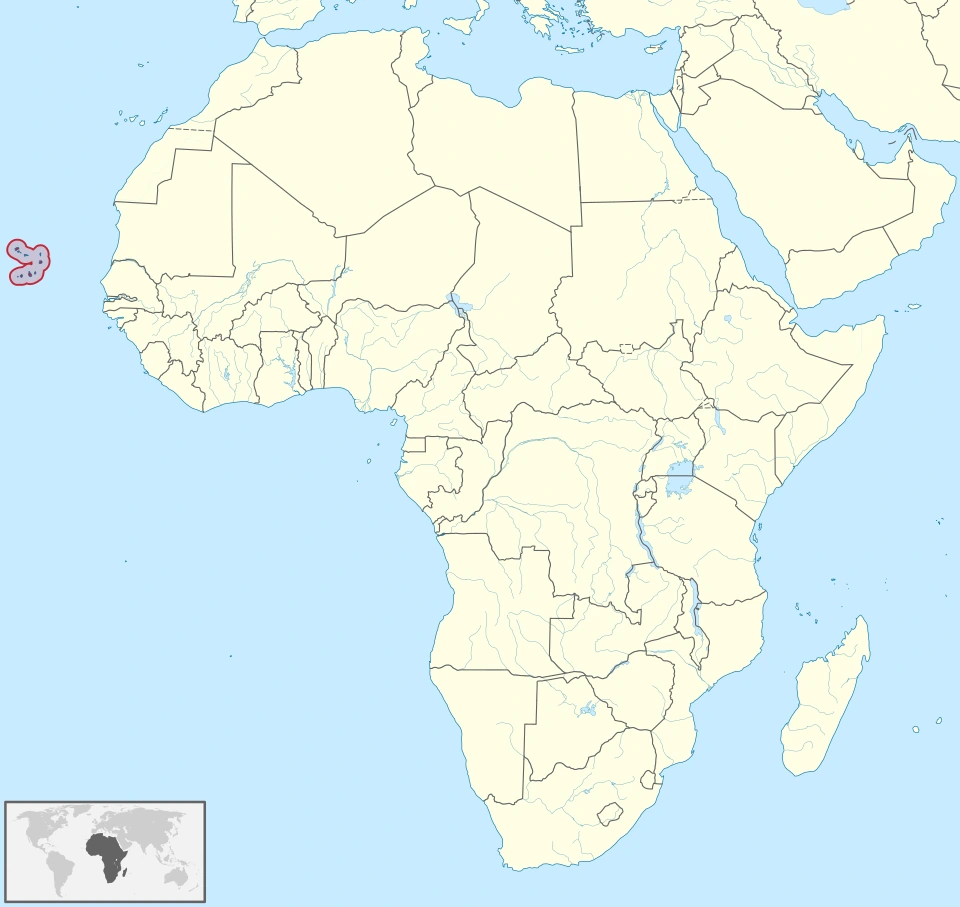
点击地图可放大 · 国家图可能只显示地形与边界，首都方位见下文；小岛位置图可能使用圆圈或插图提示。
认识国家／地区 佛得角位于西非外海的大西洋上，由多座火山岛组成。名称虽然有“角”，却不是大陆上的半岛；岛屿之间距离和降水差异，使海运、航空及海外联系格外重要。
认识首都／城市 普拉亚在圣地亚哥岛南部，名字在葡萄牙语中有“海滩”之意。城市的高地老城区与沿岸街区相连，是政府和交通中心；学习时先找圣地亚哥岛，再找岛南岸的首都。
记忆钩子 佛得角是群岛，普拉亚在圣地亚哥岛。
容易混淆 不要与塞内加尔的佛得角半岛混淆。
本条资料来源与地图许可 国家地图：File:Cape Verde-CIA WFB Map.png
大洲位置图：File:Cape Verde in Africa.svg CC BY-SA 3.0
西非 · GW
几内亚比绍Guinea-Bissau 首都 比绍 Bissau
国家／地区地图 · 看轮廓与邻近位置 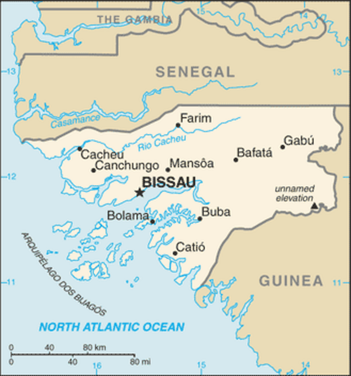
非洲位置图 · 看大洲方位 点击地图可放大 · 国家图可能只显示地形与边界，首都方位见下文；小岛位置图可能使用圆圈或插图提示。
认识国家／地区 几内亚比绍位于西非海岸，邻接塞内加尔和几内亚。大陆沿岸河口众多，近海有比热戈斯群岛；“比绍”既帮助区分同名国家，也直接提示首都名称。
认识首都／城市 比绍位于热巴河口附近，是面向大西洋的港城。它由殖民时期的贸易据点发展为政治中心，沿岸位置有利于连接内陆河道与外海；国家名和首都名的重复最适合直接记忆。
记忆钩子 几内亚比绍，首都就是比绍。
容易混淆 几内亚、几内亚比绍、赤道几内亚是三个国家。
本条资料来源与地图许可 国家地图：File:Guinea-Bissau-CIA WFB Map.png
大洲位置图：File:Guinea-Bissau in Africa.svg CC BY-SA 3.0
国家／地区地图 · 看轮廓与邻近位置 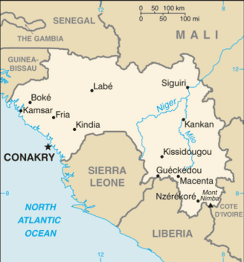
非洲位置图 · 看大洲方位 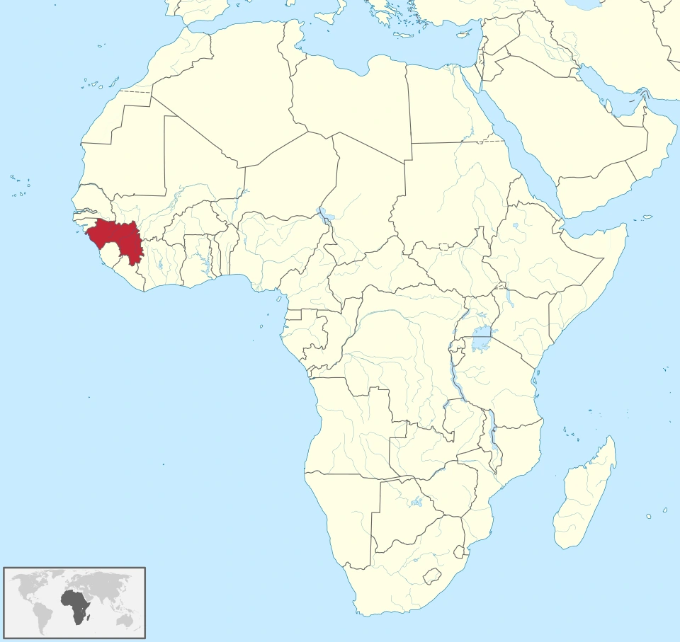
点击地图可放大 · 国家图可能只显示地形与边界，首都方位见下文；小岛位置图可能使用圆圈或插图提示。
认识国家／地区 几内亚位于西非大西洋岸，境内高地是多条西非大河的源头地区。沿海平原、富塔贾隆高地和内陆森林带差异明显；铝土矿资源也是认识其经济的一条线索。
认识首都／城市 科纳克里位于西部海岸，由岛屿和向海伸出的半岛发展而来。它是港口、行政和商业中心；狭长的城市形态与国土内陆的山地形成对照，记忆时可想象“海边细长首都”。
记忆钩子 几内亚在海岸，科纳克里伸向海。
容易混淆 科纳克里属于几内亚，不属于几内亚比绍。
本条资料来源与地图许可 国家地图：File:Guinea-CIA WFB Map.png
大洲位置图：File:Guinea in Africa.svg CC BY-SA 3.0
国家／地区地图 · 看轮廓与邻近位置 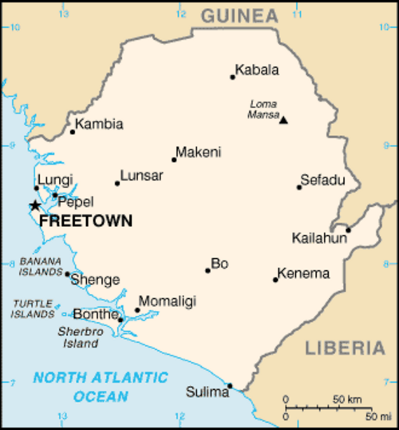
非洲位置图 · 看大洲方位 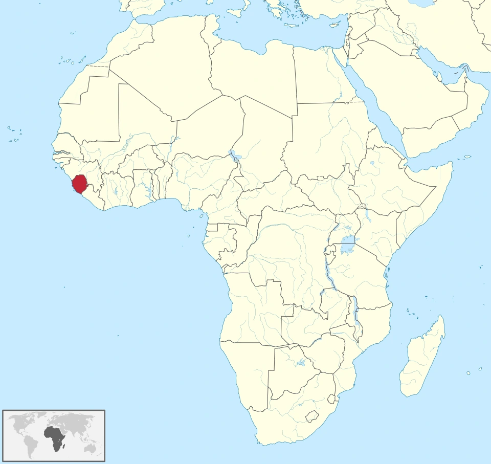
点击地图可放大 · 国家图可能只显示地形与边界，首都方位见下文；小岛位置图可能使用圆圈或插图提示。
认识国家／地区 塞拉利昂位于西非海岸，邻接几内亚和利比里亚。沿海山地、河口和平原共同构成国家景观；国名常被解释为“狮子山”，可以帮助建立山与海相遇的印象。
认识首都／城市 弗里敦位于西部半岛，面向宽阔的天然港湾。城市历史与获释非洲人及反奴隶贸易活动有关，英文名意为“自由城”；将历史含义和海湾位置一起记，比单纯背音节更牢固。
记忆钩子 塞拉利昂的“自由城”，就是弗里敦。
容易混淆 Freetown可直译自由城，中文通用译名是弗里敦。
本条资料来源与地图许可 国家地图：File:Sierra Leone-CIA WFB Map.png
大洲位置图：File:Sierra Leone in Africa.svg CC BY-SA 3.0
国家／地区地图 · 看轮廓与邻近位置 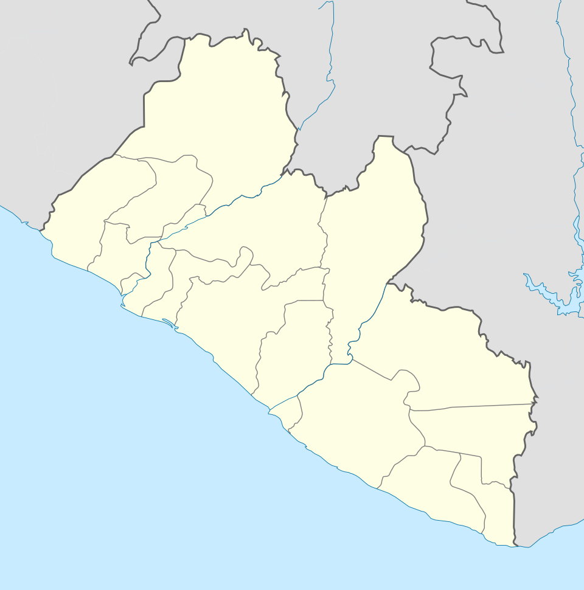
非洲位置图 · 看大洲方位 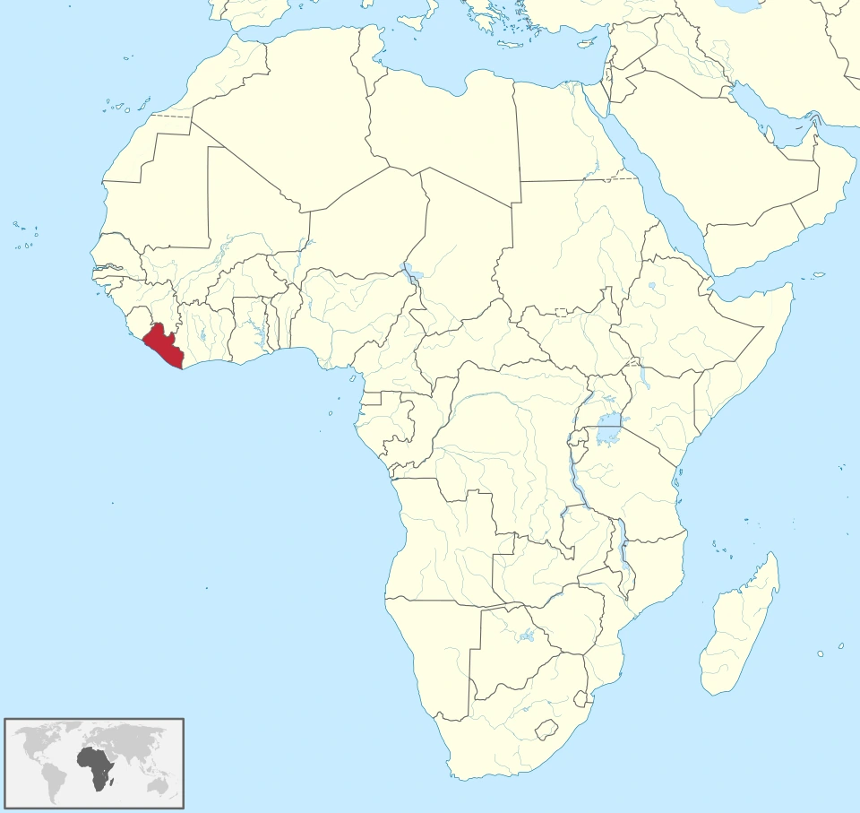
点击地图可放大 · 国家图可能只显示地形与边界，首都方位见下文；小岛位置图可能使用圆圈或插图提示。
认识国家／地区 利比里亚位于西非大西洋岸，邻接塞拉利昂、几内亚和科特迪瓦。现代国家形成与来自美国的自由黑人移民有关，这一历史背景也体现在国名和首都命名中。
认识首都／城市 蒙罗维亚位于梅苏拉多河口附近，临大西洋。城市名称纪念美国总统詹姆斯·门罗，是政府与港口中心；把“利比里亚的移民历史—门罗—蒙罗维亚”连成一条记忆链即可。
记忆钩子 利比里亚的历史联系门罗，首都蒙罗维亚。
容易混淆 门罗是命名来源，不是当地地理词语。
本条资料来源与地图许可 国家地图：File:Liberia location map.svg CC BY-SA 3.0
大洲位置图：File:Liberia in Africa.svg CC BY-SA 3.0
国家／地区地图 · 看轮廓与邻近位置 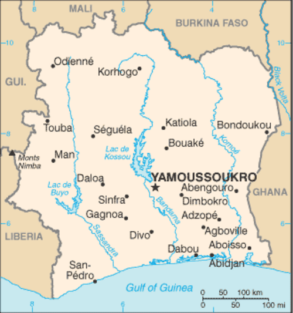
非洲位置图 · 看大洲方位 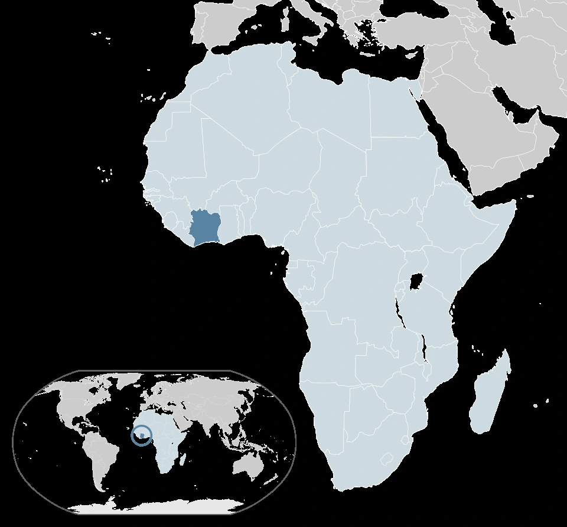
点击地图可放大 · 国家图可能只显示地形与边界，首都方位见下文；小岛位置图可能使用圆圈或插图提示。
认识国家／地区 科特迪瓦位于西非几内亚湾北岸，南部湿润、北部较干。国名意为“象牙海岸”，可用于联想旧时贸易；可可生产和海港城市是理解其经济与空间分布的线索。
认识首都／城市 亚穆苏克罗在内陆，是1983年确立的政治首都；原首都阿比让仍承担重要经济和行政功能。首都以开阔规划和大型宗教建筑闻名，学习时要同时记住“内陆首都、沿海大城”的分工。
记忆钩子 科特迪瓦：内陆亚穆苏克罗，海边阿比让。
容易混淆 不要因为阿比让更大、更常见就把它写成首都。
本条资料来源与地图许可 国家地图：File:Cote d'Ivoire-CIA WFB Map.png
大洲位置图：File:Location Côte d'Ivoire AU Africa.svg
国家／地区地图 · 看轮廓与邻近位置 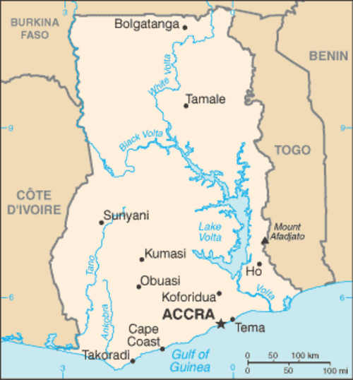
非洲位置图 · 看大洲方位 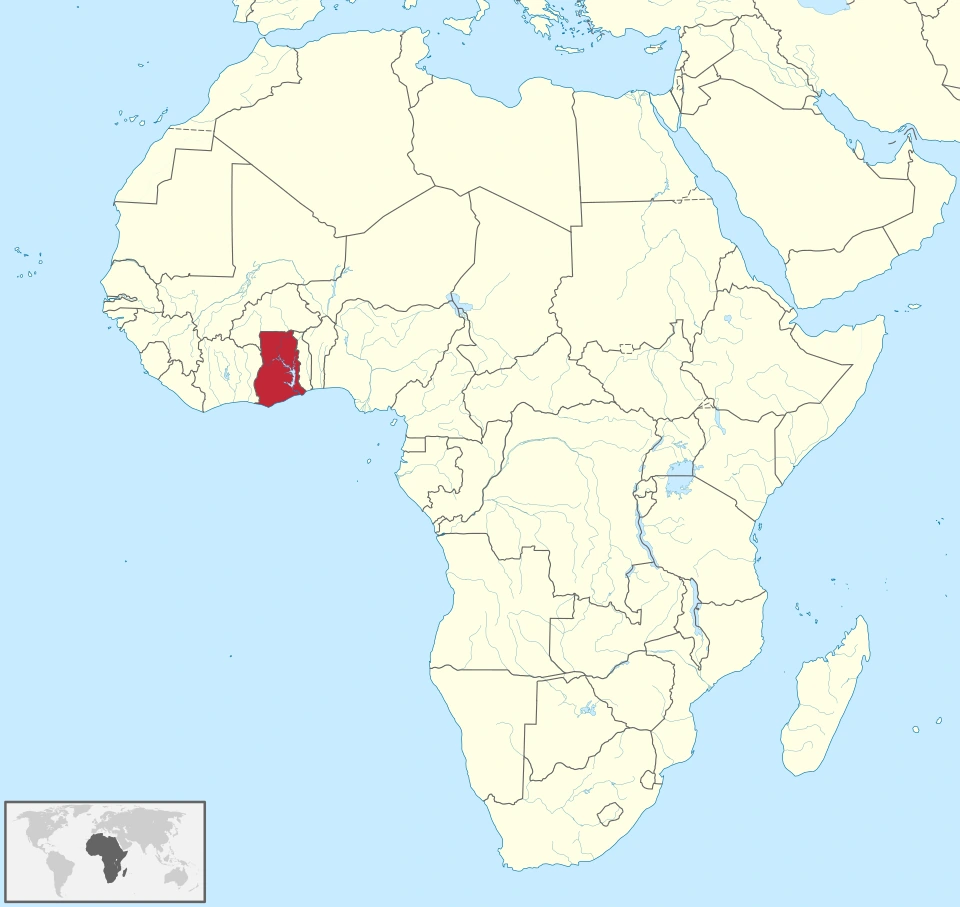
点击地图可放大 · 国家图可能只显示地形与边界，首都方位见下文；小岛位置图可能使用圆圈或插图提示。
认识国家／地区 加纳位于西非几内亚湾岸，西邻科特迪瓦、东邻多哥。内陆沃尔特河系统与大型水库影响交通和电力；黄金海岸的历史名称，也提示其资源与海上贸易传统。
认识首都／城市 阿克拉位于东南部海岸，紧邻几内亚湾，是行政与商业中心。现代街区、传统聚落和海岸城堡反映不同历史阶段；记忆首都位置时，注意它靠海，且偏向国土东侧。
记忆钩子 加纳靠海，阿克拉在东南岸。
容易混淆 阿克拉是首都，库马西是另一重要历史与商业城市。
本条资料来源与地图许可 国家地图：File:Ghana-CIA WFB Map.png
大洲位置图：File:Ghana in Africa.svg CC BY-SA 3.0
国家／地区地图 · 看轮廓与邻近位置 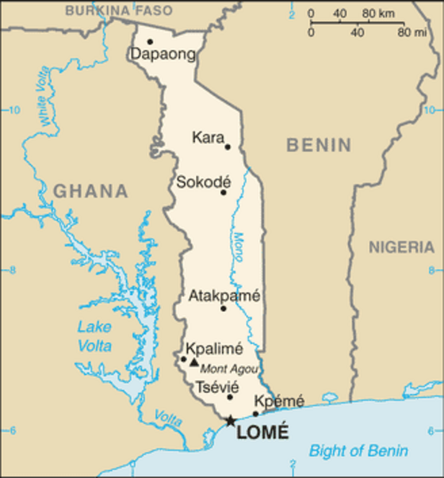
非洲位置图 · 看大洲方位 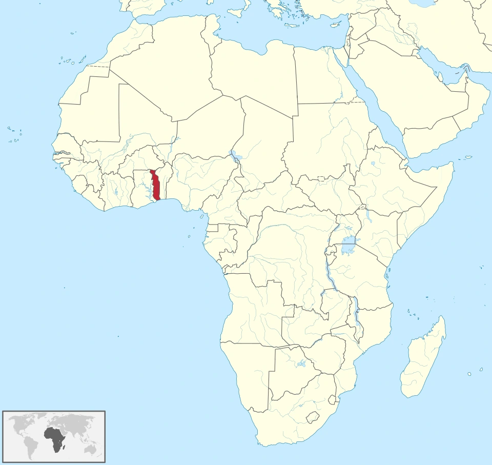
点击地图可放大 · 国家图可能只显示地形与边界，首都方位见下文；小岛位置图可能使用圆圈或插图提示。
认识国家／地区 多哥位于西非，是从几内亚湾向北延伸的狭长国家，夹在加纳与贝宁之间。短海岸与较长的南北轴线形成鲜明外形，地形由沿海平原过渡到内陆高地。
认识首都／城市 洛美位于最南端海岸，紧靠与加纳相邻的国境，是港口和首都。沿海位置让城市承担国际贸易功能；看地图时抓住“狭长国家底端、靠西边界”的位置便能定位。
记忆钩子 多哥是一条长带，洛美在海边底端。
容易混淆 洛美在多哥；邻国贝宁的首都是波多诺伏。
本条资料来源与地图许可 国家地图：File:Togo-CIA WFB Map.png
大洲位置图：File:Togo in Africa.svg CC BY-SA 3.0
国家／地区地图 · 看轮廓与邻近位置 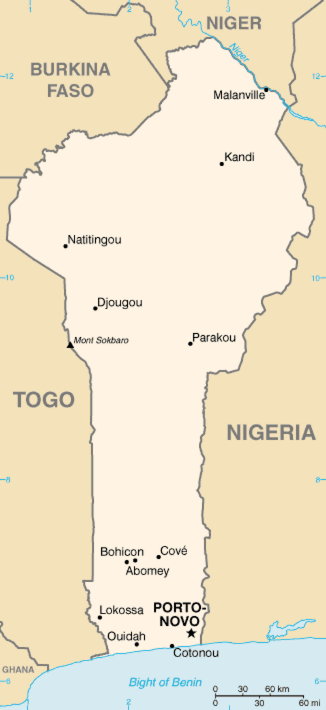
非洲位置图 · 看大洲方位 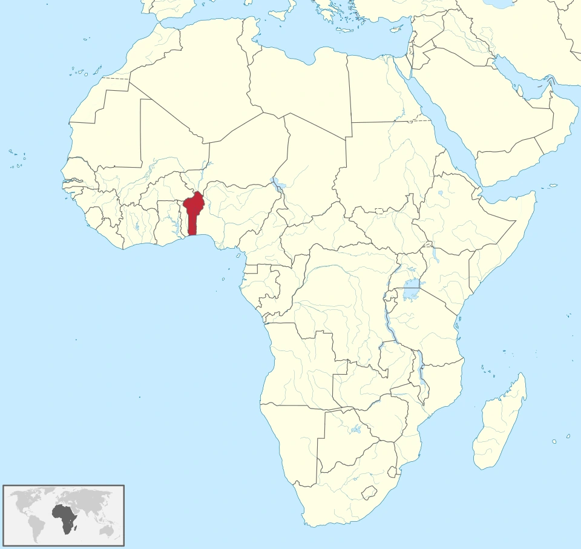
点击地图可放大 · 国家图可能只显示地形与边界，首都方位见下文；小岛位置图可能使用圆圈或插图提示。
认识国家／地区 贝宁位于西非，南临几内亚湾，西邻多哥、东邻尼日利亚。国土向北扩展，历史上的达荷美王国与沿海贸易遗迹，为认识国家文化提供背景。
认识首都／城市 波多诺伏位于东南部潟湖一带，是正式首都；政府主要办公机构及重要商业活动则集中在科托努。两城相距不远，容易被简化资料混用，因此要把法律首都与行政活动地点一起记住。
记忆钩子 贝宁正式首都波多诺伏，政府多在科托努。
容易混淆 科托努是主要行政与经济中心，不能替代正式首都名。
本条资料来源与地图许可 国家地图：File:Benin-CIA WFB Map.png
大洲位置图：File:Benin in Africa.svg CC BY-SA 3.0
国家／地区地图 · 看轮廓与邻近位置 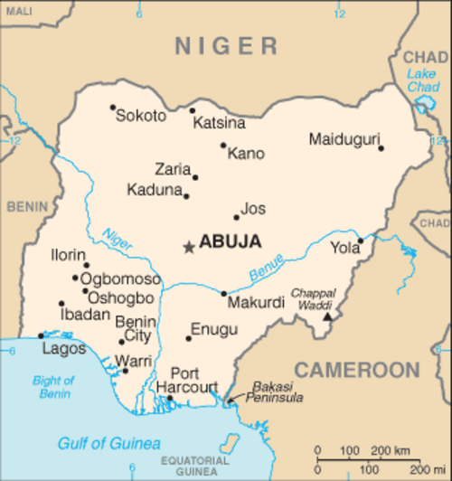
非洲位置图 · 看大洲方位 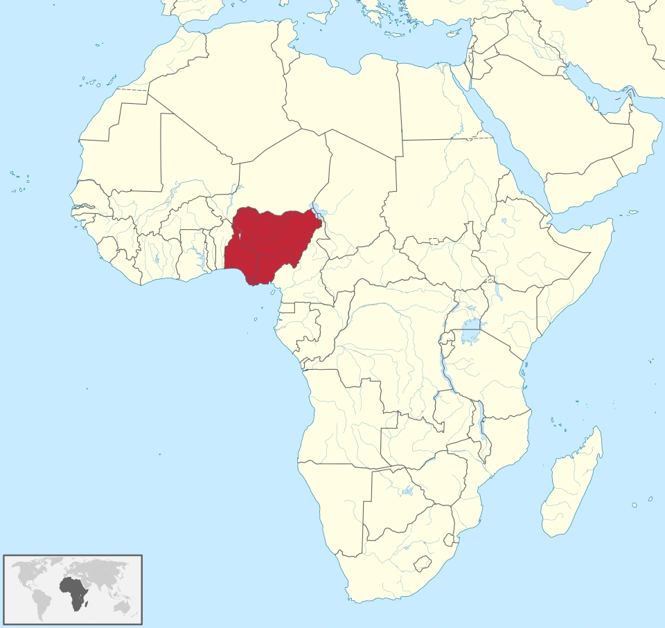
点击地图可放大 · 国家图可能只显示地形与边界，首都方位见下文；小岛位置图可能使用圆圈或插图提示。
认识国家／地区 尼日利亚位于西非几内亚湾岸，尼日尔河与贝努埃河在内陆汇合。人口、语言与区域文化多样，南部海岸和北部内陆差异鲜明；不要把它与邻国尼日尔混为一国。
认识首都／城市 阿布贾位于内陆较居中的地区，1991年取代拉各斯成为首都。规划新城的选择旨在缓解旧首都压力，并提供较中性的行政位置；拉各斯仍是规模庞大的商业与港口都市。
记忆钩子 尼日利亚迁向内陆，首都阿布贾。
容易混淆 拉各斯是旧首都；尼日尔的首都是尼亚美。
本条资料来源与地图许可 国家地图：File:Nigeria-CIA WFB Map.png
大洲位置图：File:Nigeria in Africa.svg CC BY-SA 3.0
国家／地区地图 · 看轮廓与邻近位置 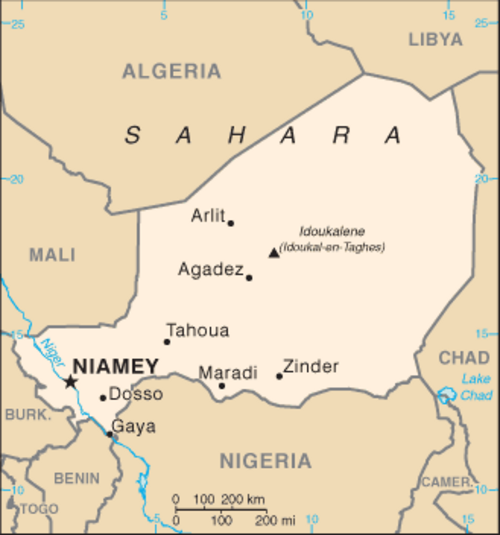
非洲位置图 · 看大洲方位 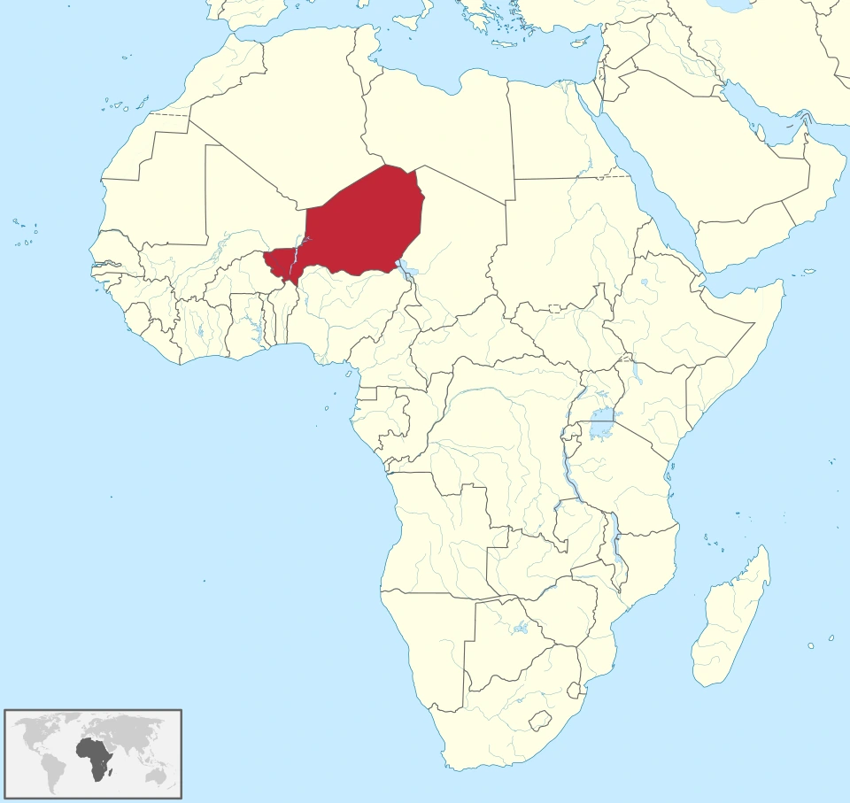
点击地图可放大 · 国家图可能只显示地形与边界，首都方位见下文；小岛位置图可能使用圆圈或插图提示。
认识国家／地区 尼日尔是西非内陆国家，北部深入撒哈拉，南部接近萨赫勒农业带。国名来自尼日尔河，但河流仅经过其西南角；大片沙漠与较集中的南部人口带形成对照。
认识首都／城市 尼亚美位于西南部尼日尔河畔，靠近布基纳法索与贝宁方向。它是行政、教育和交通中心；首都并不在国土几何中心，河水与通道条件比沙漠面积更能解释其位置。
记忆钩子 尼日尔河边的尼亚美，国家和首都都带“尼”。
容易混淆 尼日尔—尼亚美；尼日利亚—阿布贾。
本条资料来源与地图许可 国家地图：File:Niger-CIA WFB Map.png
大洲位置图：File:Niger in Africa.svg CC BY-SA 3.0
国家／地区地图 · 看轮廓与邻近位置 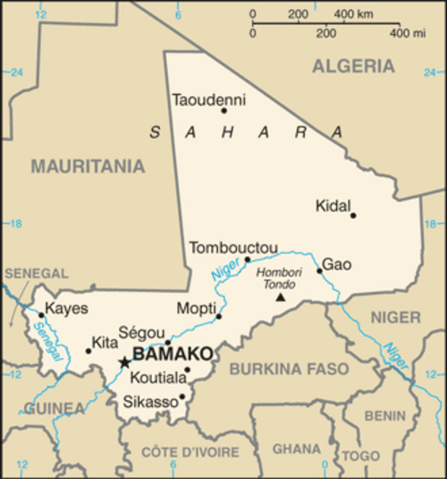
非洲位置图 · 看大洲方位 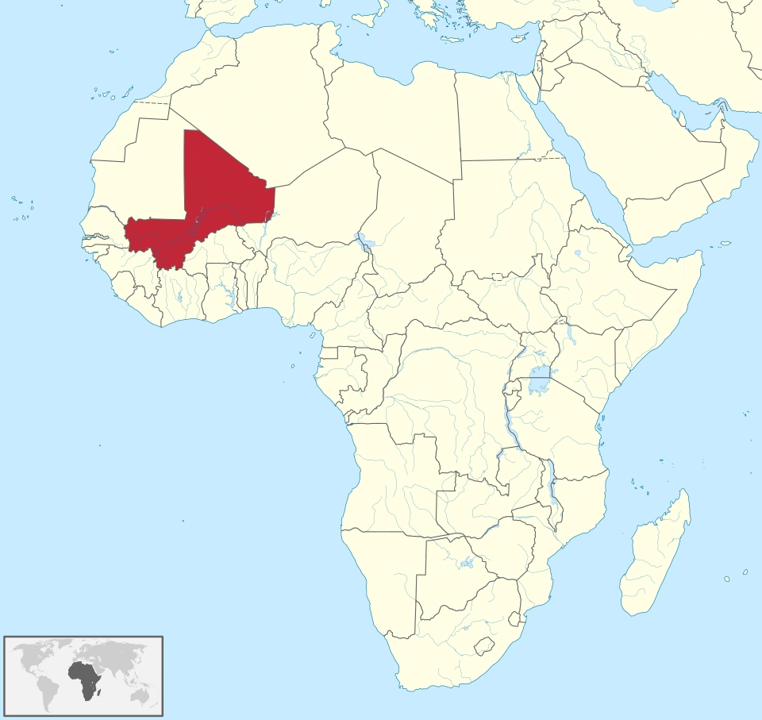
点击地图可放大 · 国家图可能只显示地形与边界，首都方位见下文；小岛位置图可能使用圆圈或插图提示。
认识国家／地区 马里是西非内陆国家，北部撒哈拉与南部较湿润地区差异很大。尼日尔河构成重要交通与农业走廊；廷巴克图、杰内等古城体现撒哈拉商路与学术传统。
认识首都／城市 巴马科位于国土西南部尼日尔河畔，是政治与交通中心。城市靠近较适宜生活和耕作的区域，而非广阔的北部沙漠；把“马里南部河城”记牢，比把首都放在地图中央更准确。
记忆钩子 马里在尼日尔河边“巴”住，首都巴马科。
容易混淆 廷巴克图很有名，但马里的首都是巴马科。
本条资料来源与地图许可 国家地图：File:Mali-CIA WFB Map.png
大洲位置图：File:Mali in Africa.svg CC BY-SA 3.0
国家／地区地图 · 看轮廓与邻近位置 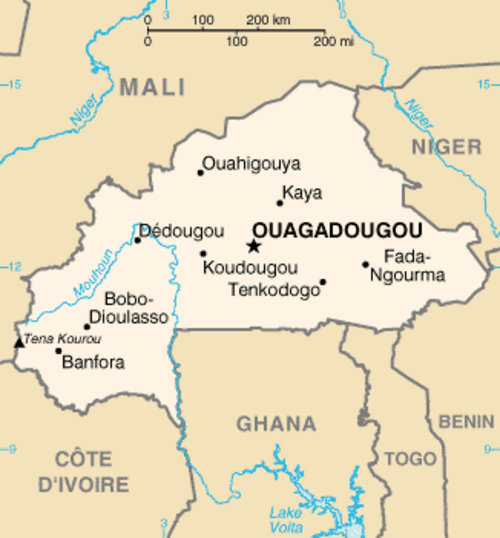
非洲位置图 · 看大洲方位 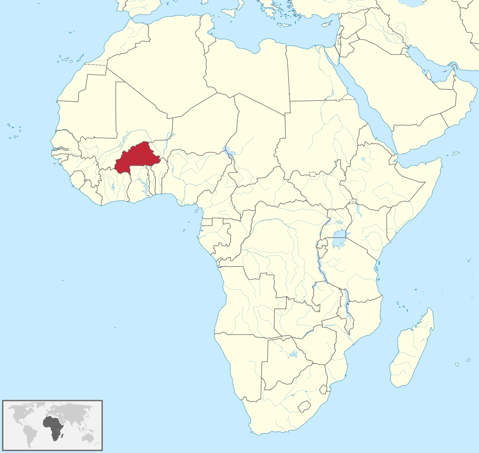
点击地图可放大 · 国家图可能只显示地形与边界，首都方位见下文；小岛位置图可能使用圆圈或插图提示。
认识国家／地区 布基纳法索位于西非内陆，夹在萨赫勒与较湿润的南部地区之间。国土不临海，传统村落、农业与区域交通相互联系；旧国名“上沃尔特”可在历史资料中见到。
认识首都／城市 瓦加杜古位于国土中部，是政府和文化活动中心。城市与莫西王国历史有关，也因非洲电影节而受到关注；长名称可拆成“瓦加—杜古”，再与内陆中心位置联系起来。
记忆钩子 布基纳法索配瓦加杜古：两组节奏都很鲜明。
容易混淆 不要只记旧国名上沃尔特；首都仍是瓦加杜古。
本条资料来源与地图许可 国家地图：File:Burkina Faso-CIA WFB Map.png
大洲位置图：File:Burkina Faso in Africa.svg CC BY-SA 3.0
中非 国家／地区地图 · 看轮廓与邻近位置 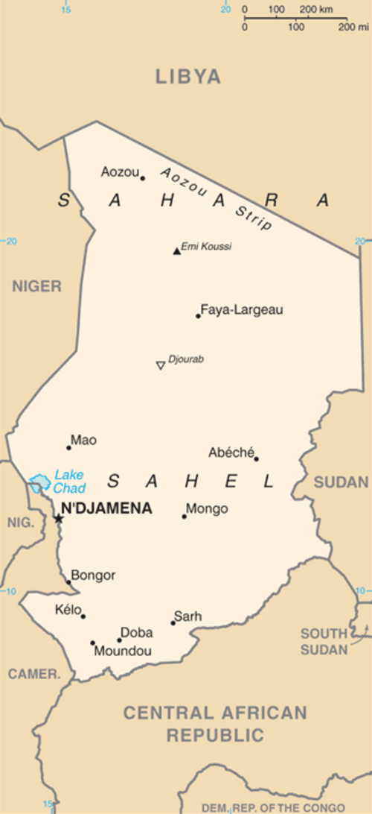
非洲位置图 · 看大洲方位 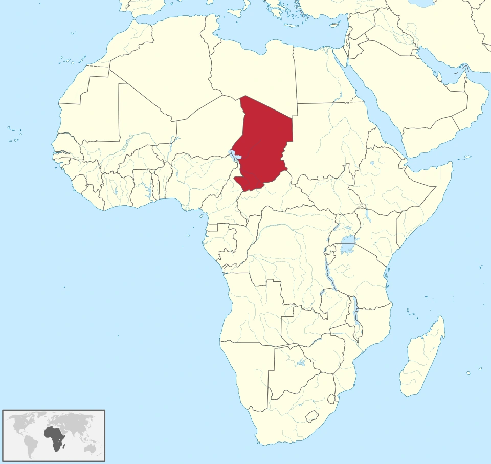
点击地图可放大 · 国家图可能只显示地形与边界，首都方位见下文；小岛位置图可能使用圆圈或插图提示。
认识国家／地区 乍得位于非洲中北部内陆，北部为撒哈拉，南部较适宜农业。西南侧的乍得湖与国家同名，但湖水范围长期变化；国家的南北气候梯度十分明显。
认识首都／城市 恩贾梅纳位于西南部沙里河畔，与喀麦隆的库塞里隔河相望。它靠近较集中的人口与交通带，旧称拉密堡；记忆首都可把位置设在“西南河边、邻国对岸”。
记忆钩子 乍得西南河岸，恩贾梅纳守在边界。
容易混淆 乍得湖不是首都；拉密堡是恩贾梅纳旧称。
本条资料来源与地图许可 国家地图：File:Chad-CIA WFB Map.png
大洲位置图：File:Chad in Africa.svg CC BY-SA 3.0
国家／地区地图 · 看轮廓与邻近位置 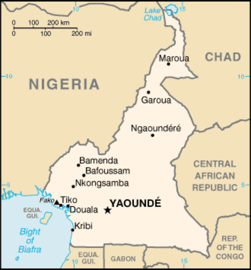
非洲位置图 · 看大洲方位 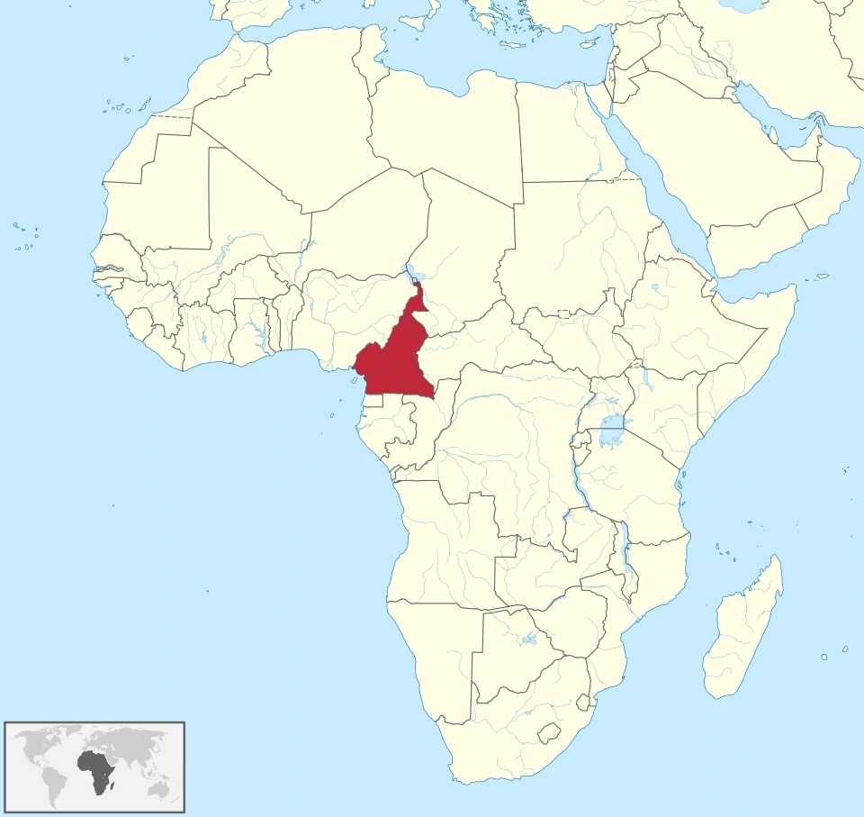
点击地图可放大 · 国家图可能只显示地形与边界，首都方位见下文；小岛位置图可能使用圆圈或插图提示。
认识国家／地区 喀麦隆位于中非与西非相接处，从几内亚湾海岸延伸到乍得湖附近。火山、雨林、高原与较干北部并存，地理多样；英语和法语地区的历史背景也值得区分。
认识首都／城市 雅温得位于南部内陆丘陵，是行政首都。海港杜阿拉承担大量商业和贸易功能，两城角色不同；将雅温得记成“丘陵里的政府城”，便能与海边经济中心分开。
记忆钩子 喀麦隆：内陆雅温得，海港杜阿拉。
容易混淆 杜阿拉更常出现在贸易信息中，但不是首都。
本条资料来源与地图许可 国家地图：File:Cameroon-CIA WFB Map.png
大洲位置图：File:Cameroon in Africa.svg CC BY-SA 3.0
中非 · CF
中非共和国Central African Republic 首都 班吉 Bangui
国家／地区地图 · 看轮廓与邻近位置 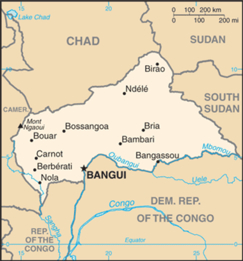
非洲位置图 · 看大洲方位 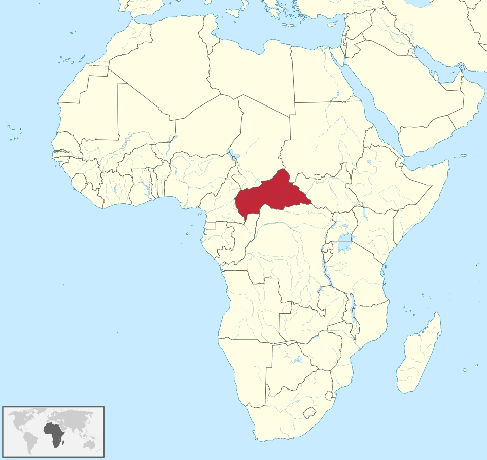
点击地图可放大 · 国家图可能只显示地形与边界，首都方位见下文；小岛位置图可能使用圆圈或插图提示。
认识国家／地区 中非共和国位于非洲内陆，周围连接乍得、苏丹、南苏丹和刚果盆地方向。北部稀树草原与南部森林带过渡明显；国名本身直接提示它处于大陆腹地。
认识首都／城市 班吉位于南部乌班吉河岸，与刚果民主共和国的宗戈隔河相望。首都靠河流运输通道和南部人口带，而不在国土中心；“中非—乌班吉河—班吉”形成自然的记忆链。
记忆钩子 中非共和国在乌班吉河边，首都班吉。
容易混淆 班吉属于中非共和国，不是泛指中部非洲的中心城市。
本条资料来源与地图许可 国家地图：File:Central African Republic-CIA WFB Map.png
大洲位置图：File:Central African Republic in Africa.svg CC BY-SA 3.0
中非 · GQ
赤道几内亚Equatorial Guinea 首都 和平城 Ciudad de la Paz
国家／地区地图 · 看轮廓与邻近位置 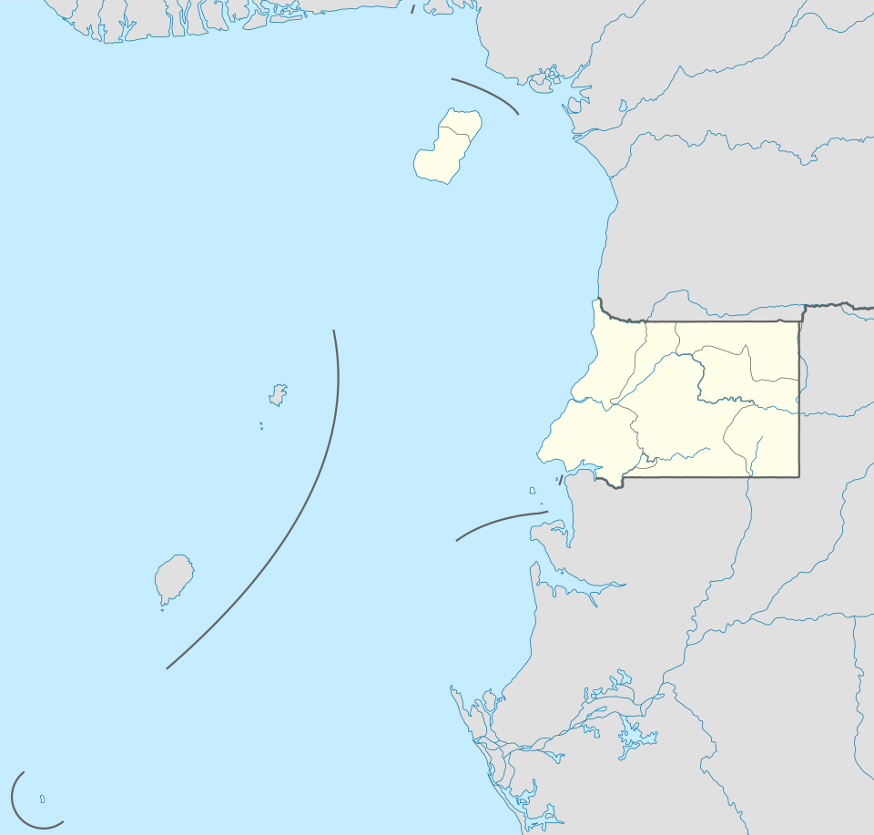
非洲位置图 · 看大洲方位 点击地图可放大 · 国家图可能只显示地形与边界，首都方位见下文；小岛位置图可能使用圆圈或插图提示。
认识国家／地区 赤道几内亚位于非洲中西部，包括大陆部分和几内亚湾岛屿。比奥科岛与大陆隔海相望，西班牙语背景在非洲较少见；国名带“赤道”，却不能据此推断所有国土都在赤道线上。
认识首都／城市 和平城，即Ciudad de la Paz，位于大陆部分，2026年1月2日获官方法令宣布为首都。旧首都马拉博在比奥科岛；新旧城市的大陆与海岛差别，是理解迁都最有效的地理线索。
记忆钩子 赤道几内亚从海岛马拉博，迁向大陆和平城。
容易混淆 旧地图、旧教材仍可能写马拉博；本版按2026年官方法令。
本条资料来源与地图许可 国家地图：File:Equatorial Guinea location map.svg CC BY-SA 3.0
大洲位置图：File:Equatorial Guinea in Africa.svg CC BY-SA 3.0
国家／地区地图 · 看轮廓与邻近位置 非洲位置图 · 看大洲方位
点击地图可放大 · 国家图可能只显示地形与边界，首都方位见下文；小岛位置图可能使用圆圈或插图提示。
认识国家／地区 加蓬位于赤道附近的大西洋岸，邻接赤道几内亚、喀麦隆和刚果共和国。境内热带森林覆盖广，河流向海汇集；海岸、森林与资源开发共同塑造国家经济地理。
认识首都／城市 利伯维尔位于西北部海岸、加蓬河口附近，名称含“自由城”的含义。它是行政和海港中心，起源与获释奴隶的安置历史有关；记忆时可与另一“自由城”弗里敦成对区分。
记忆钩子 加蓬的自由城叫利伯维尔。
容易混淆 利伯维尔属于加蓬；弗里敦属于塞拉利昂。
本条资料来源与地图许可 国家地图：File:Gabon-CIA WFB Map.png
大洲位置图：File:Gabon in Africa.svg CC BY-SA 3.0
中非 · CG
刚果共和国Republic of the Congo 首都 布拉柴维尔 Brazzaville
国家／地区地图 · 看轮廓与邻近位置 非洲位置图 · 看大洲方位
点击地图可放大 · 国家图可能只显示地形与边界，首都方位见下文；小岛位置图可能使用圆圈或插图提示。
认识国家／地区 刚果共和国位于中非大西洋岸，东南侧沿刚果河与刚果民主共和国相接。热带森林、河流和海岸共同构成国家地理；中文常简称“刚果（布）”，括号提示首都。
认识首都／城市 布拉柴维尔位于刚果河北岸，与金沙萨隔河相望。两国首都如此接近，特别适合对照记忆；城市名与探险者德布拉柴有关，行政中心与河运交通共同支撑其发展。
记忆钩子 刚果（布）—布拉柴维尔，河对岸是金沙萨。
容易混淆 刚果共和国与刚果民主共和国是不同国家。
本条资料来源与地图许可 国家地图：File:Congo, Republic of the-CIA WFB Map.png
大洲位置图：File:Republic of the Congo in Africa.svg CC BY-SA 3.0
中非 · CD
刚果民主共和国Democratic Republic of the Congo 首都 金沙萨 Kinshasa
国家／地区地图 · 看轮廓与邻近位置 非洲位置图 · 看大洲方位
点击地图可放大 · 国家图可能只显示地形与边界，首都方位见下文；小岛位置图可能使用圆圈或插图提示。
认识国家／地区 刚果民主共和国位于中非，幅员广阔，刚果盆地雨林与东部高地构成主要景观。大西洋海岸很短，刚果河系统深入内陆；中文常称“刚果（金）”。
认识首都／城市 金沙萨位于西部刚果河南岸，与布拉柴维尔隔河相望。旧称利奥波德维尔，1960年代改用现名；理解首都位置时，抓住它处于河运与通向下游海岸路线交接的地带。
记忆钩子 刚果（金）—金沙萨，河对岸是布拉柴维尔。
容易混淆 两国首都隔河；地图上先分清国界再记城市。
本条资料来源与地图许可 国家地图：File:Congo, Democratic Republic of the-CIA WFB Map.png
大洲位置图：File:Democratic Republic of the Congo in Africa.svg CC BY-SA 3.0
中非 · ST
圣多美和普林西比São Tomé and Príncipe 首都 圣多美 São Tomé
国家／地区地图 · 看轮廓与邻近位置 非洲位置图 · 看大洲方位
点击地图可放大 · 国家图可能只显示地形与边界，首都方位见下文；小岛位置图可能使用圆圈或插图提示。
认识国家／地区 圣多美和普林西比是几内亚湾中的岛国，主要由两座同名火山岛组成。赤道穿过其南部附近的小岛，热带气候和种植园历史鲜明；不要把长国名当成一座城市。
认识首都／城市 圣多美市位于圣多美岛东北岸，是政治和港口中心。国家名的前半部分就是首都名；学习时先分出圣多美与普林西比两岛，再把政府中心放在较大的圣多美岛上。
记忆钩子 圣多美和普林西比，首都取前半段圣多美。
容易混淆 圣多美可指岛也可指城市，首都指圣多美市。
本条资料来源与地图许可 国家地图：File:Sao Tome and Principe-CIA WFB Map.png
大洲位置图：File:Sao Tome and Principe in Africa.svg CC BY-SA 3.0
国家／地区地图 · 看轮廓与邻近位置 非洲位置图 · 看大洲方位
点击地图可放大 · 国家图可能只显示地形与边界，首都方位见下文；小岛位置图可能使用圆圈或插图提示。
认识国家／地区 安哥拉位于非洲西南部大西洋岸，内陆有大片高原。卡宾达是与主体国土分开的沿海地区，葡萄牙语体现殖民历史；石油与矿产资源影响其产业布局。
认识首都／城市 罗安达位于西北部海岸，是重要港口和政府中心。城市由葡萄牙时期据点发展而来，海湾和沿岸新区构成醒目的空间特征；把首都记在国土上半部靠海的位置即可。
记忆钩子 安哥拉面向大西洋，罗安达在西北海岸。
容易混淆 卡宾达与主体国土分开，但罗安达在主体部分。
本条资料来源与地图许可 国家地图：File:Angola location map.svg CC BY-SA 3.0
大洲位置图：File:Angola in Africa.svg CC BY-SA 3.0
东非 国家／地区地图 · 看轮廓与邻近位置 非洲位置图 · 看大洲方位
点击地图可放大 · 国家图可能只显示地形与边界，首都方位见下文；小岛位置图可能使用圆圈或插图提示。
认识国家／地区 南苏丹于2011年独立，位于非洲内陆，北邻苏丹。白尼罗河流经国境，苏德沼泽是突出的湿地景观；与苏丹分开记忆，才能避免把两国首都串联错。
认识首都／城市 朱巴位于南部白尼罗河沿岸，是独立后沿用的首都。河道、跨河桥梁和通往周边国家的道路使其成为交通节点；关于迁往拉姆塞尔的规划，不能直接当作已经完成迁都。
记忆钩子 南苏丹在南边，朱巴也靠南。
容易混淆 朱巴是现首都；迁都规划不等于首都已变。
本条资料来源与地图许可 国家地图：File:South Sudan-CIA WFB Map.png
大洲位置图：File:South Sudan in Africa (de-facto).svg CC BY-SA 3.0
国家／地区地图 · 看轮廓与邻近位置 非洲位置图 · 看大洲方位
点击地图可放大 · 国家图可能只显示地形与边界，首都方位见下文；小岛位置图可能使用圆圈或插图提示。
认识国家／地区 埃塞俄比亚位于非洲之角内陆，以高原和山地为主要地貌。东非大裂谷穿过国境，历史王朝与多种语言文化并存；厄立特里亚独立后，它不再拥有海岸线。
认识首都／城市 亚的斯亚贝巴位于高地，名称常译为“新花”。它既是国家首都，也是非洲联盟总部所在地；高海拔与大陆外交中心这两条线索，可帮助理解其气候和国际角色。
记忆钩子 埃塞高原开“新花”，亚的斯亚贝巴。
容易混淆 首都在高原内陆；非盟总部也在这里。
本条资料来源与地图许可 国家地图：File:Ethiopia-CIA WFB Map.png
大洲位置图：File:Ethiopia in Africa.svg CC BY-SA 3.0
国家／地区地图 · 看轮廓与邻近位置 非洲位置图 · 看大洲方位
点击地图可放大 · 国家图可能只显示地形与边界，首都方位见下文；小岛位置图可能使用圆圈或插图提示。
认识国家／地区 厄立特里亚位于非洲之角西北侧，东临红海，包括沿岸岛屿。海岸低地与内陆高原气候差异较大；其现代国家历史与埃塞俄比亚及意大利殖民时期均有关联。
认识首都／城市 阿斯马拉位于内陆高原，是1993年独立后国家的首都。城市保留较多20世纪早期建筑，现代主义建筑群受到文化遗产关注；记忆时将它放在高地，而非红海港口。
记忆钩子 厄立特里亚有海岸，阿斯马拉却在高原。
容易混淆 马萨瓦是港口，阿斯马拉才是首都。
本条资料来源与地图许可 国家地图：File:Eritrea-CIA WFB Map.png
大洲位置图：File:Eritrea in Africa.svg CC BY-SA 3.0
国家／地区地图 · 看轮廓与邻近位置 非洲位置图 · 看大洲方位
点击地图可放大 · 国家图可能只显示地形与边界，首都方位见下文；小岛位置图可能使用圆圈或插图提示。
认识国家／地区 吉布提位于红海南端与亚丁湾相接处，扼守曼德海峡附近的海上通道。国土较小，气候干旱，邻接厄立特里亚、埃塞俄比亚和索马里；港口功能非常突出。
认识首都／城市 吉布提市位于东南部沿海，与国家同名。它承担政府、海港与区域转运功能，是埃塞俄比亚对外贸易的重要通道之一；“小国—海峡—同名港城”可以连成完整记忆。
记忆钩子 吉布提国家小，首都直接叫吉布提市。
容易混淆 城市与国家同名；注意这里属于非洲。
本条资料来源与地图许可 国家地图：File:Djibouti-CIA WFB Map.png
大洲位置图：File:Djibouti in Africa.svg CC BY-SA 3.0
国家／地区地图 · 看轮廓与邻近位置 非洲位置图 · 看大洲方位
点击地图可放大 · 国家图可能只显示地形与边界，首都方位见下文；小岛位置图可能使用圆圈或插图提示。
认识国家／地区 索马里占据非洲之角东部，长海岸面向亚丁湾与印度洋。国土大体呈向东伸出的角状，气候较干；涉及地区自治及争议地位的资料应区分不同口径。
认识首都／城市 摩加迪沙位于南部印度洋岸，是历史悠久的贸易港口和首都。海上商路连接阿拉伯地区、东非与印度洋各地；把它记在“非洲之角南侧海岸”，即可与北部沿湾城市区分。
记忆钩子 索马里的角伸向海，摩加迪沙在南岸。
容易混淆 哈尔格萨等城市有各自地区背景，不能替换全国首都。
本条资料来源与地图许可 国家地图：File:Somalia-CIA WFB Map.png
大洲位置图：File:Somalia in Africa.svg CC BY-SA 3.0
国家／地区地图 · 看轮廓与邻近位置 非洲位置图 · 看大洲方位
点击地图可放大 · 国家图可能只显示地形与边界，首都方位见下文；小岛位置图可能使用圆圈或插图提示。
认识国家／地区 肯尼亚位于东非，东南临印度洋，赤道穿过国境。高原、东非大裂谷和沿海低地并存，野生动物保护区闻名；国家位置可通过邻近维多利亚湖和印度洋定位。
认识首都／城市 内罗毕位于南部内陆高原，由铁路相关聚落发展成重要城市。它是政府、交通和国际机构中心，海拔使气候区别于热带海岸；蒙巴萨是海港，两者在地图上相距明显。
记忆钩子 肯尼亚高原记内罗毕，海岸记蒙巴萨。
容易混淆 内罗毕不是海港；不要把旅游港城当首都。
本条资料来源与地图许可 国家地图：File:Kenya-CIA WFB Map.png
大洲位置图：File:Kenya in Africa (de-facto).svg CC BY-SA 3.0
国家／地区地图 · 看轮廓与邻近位置 非洲位置图 · 看大洲方位
点击地图可放大 · 国家图可能只显示地形与边界，首都方位见下文；小岛位置图可能使用圆圈或插图提示。
认识国家／地区 乌干达位于东非内陆，南部临维多利亚湖，白尼罗河上游与其相连。湖泊、高原及湿润农业区是主要地理线索；国家不临海，但水域资源丰富。
认识首都／城市 坎帕拉位于维多利亚湖北侧的丘陵地区，历史与布干达王国有关。它是政治和商业中心，附近恩德培承担重要航空与部分政府功能；首都名称与坎帕拉的丘陵形象相联系最便于记忆。
记忆钩子 乌干达在湖边丘陵上“坎”着，首都坎帕拉。
容易混淆 恩德培机场有名，但首都是坎帕拉。
本条资料来源与地图许可 国家地图：File:Uganda-CIA WFB Map.png
大洲位置图：File:Uganda in Africa.svg CC BY-SA 3.0
国家／地区地图 · 看轮廓与邻近位置 非洲位置图 · 看大洲方位
点击地图可放大 · 国家图可能只显示地形与边界，首都方位见下文；小岛位置图可能使用圆圈或插图提示。
认识国家／地区 卢旺达是东非内陆小国，邻接乌干达、坦桑尼亚、布隆迪和刚果民主共和国。起伏丘陵密集，常以“千丘之国”描述；学习时应与南邻布隆迪成对比较。
认识首都／城市 基加利位于国土中部，城市沿丘陵和山谷铺展。它是行政与交通枢纽，1994年种族灭绝纪念设施让历史反思成为认识城市的重要部分；记忆首都位置可直接抓住“中央丘陵城”。
记忆钩子 卢旺达千丘，中心丘陵是基加利。
容易混淆 基加利属卢旺达；基特加属布隆迪。
本条资料来源与地图许可 国家地图：File:Rwanda-CIA WFB Map.png
大洲位置图：File:Rwanda in Africa.svg CC BY-SA 3.0
国家／地区地图 · 看轮廓与邻近位置 非洲位置图 · 看大洲方位
点击地图可放大 · 国家图可能只显示地形与边界，首都方位见下文；小岛位置图可能使用圆圈或插图提示。
认识国家／地区 布隆迪位于东非内陆，西南临坦噶尼喀湖，地形以高地和丘陵为主。北邻卢旺达，两国面积和地理背景相近，但首都迁移经历不同，适合放在一起辨认。
认识首都／城市 基特加位于内陆中部高地，2019年成为政治首都，历史上也是王室中心。旧首都布琼布拉在坦噶尼喀湖岸，继续承担重要经济功能；“高地政治城、湖岸经济城”是关键区分。
记忆钩子 布隆迪政治首都上高地，基特加。
容易混淆 布琼布拉是旧首都与经济中心，旧地图可能仍标它。
本条资料来源与地图许可 国家地图：File:Burundi location map.svg CC BY 3.0
大洲位置图：File:Burundi in Africa.svg CC BY-SA 3.0
国家／地区地图 · 看轮廓与邻近位置 非洲位置图 · 看大洲方位
点击地图可放大 · 国家图可能只显示地形与边界，首都方位见下文；小岛位置图可能使用圆圈或插图提示。
认识国家／地区 坦桑尼亚位于东非印度洋岸，由大陆坦噶尼喀与桑给巴尔联合形成。维多利亚湖、坦噶尼喀湖及乞力马扎罗山提供鲜明定位线索；沿海与内陆高原差异较大。
认识首都／城市 多多马位于大陆内陆中部，是正式首都，议会与政府机构在此发展。达累斯萨拉姆是旧首都和重要海港，仍有显著经济作用；记忆时用“多多马在中间，达市在海边”区分。
记忆钩子 坦桑尼亚向内陆建首都，多多马在中部。
容易混淆 达累斯萨拉姆不是现正式首都；地图注意版本。
本条资料来源与地图许可 国家地图：File:Tanzania location map.svg CC BY-SA 4.0
大洲位置图：File:Tanzania in Africa.svg CC BY-SA 3.0
国家／地区地图 · 看轮廓与邻近位置 非洲位置图 · 看大洲方位
点击地图可放大 · 国家图可能只显示地形与边界，首都方位见下文；小岛位置图可能使用圆圈或插图提示。
认识国家／地区 赞比亚是南部非洲内陆国家，南部与赞比西河及维多利亚瀑布相连。高原地形广泛，铜矿带位于较北部地区；国名与赞比西河的联系可帮助定位。
认识首都／城市 卢萨卡位于国土南部高原，是行政和交通中心，殖民时期取代利文斯通成为首府。道路与铁路在此汇集，便于连接铜矿带和南部邻国；首都不在国名所指的大河岸边。
记忆钩子 赞比亚南部高原，卢萨卡连通四方。
容易混淆 卢萨卡属赞比亚，卢旺达的首都是基加利。
本条资料来源与地图许可 国家地图：File:Zambia-CIA WFB Map.png
大洲位置图：File:Zambia in Africa.svg CC BY-SA 3.0
国家／地区地图 · 看轮廓与邻近位置 非洲位置图 · 看大洲方位
点击地图可放大 · 国家图可能只显示地形与边界，首都方位见下文；小岛位置图可能使用圆圈或插图提示。
认识国家／地区 马拉维是南部非洲内陆国家，沿狭长的马拉维湖西岸及南端延伸。湖泊与周边高地决定许多聚落和农业区分布；看图时先找到东侧长湖，再识别国家轮廓。
认识首都／城市 利隆圭位于中部内陆，1975年取代松巴成为首都。城市分为传统商业区域与规划行政街区，较居中的位置有利于联系南北；布兰太尔是另一重要经济城市，不能替代首都。
记忆钩子 马拉维围着长湖，利隆圭在中部内陆。
容易混淆 松巴是旧首都，布兰太尔是重要商业城市。
本条资料来源与地图许可 国家地图：File:Malawi-CIA WFB Map.png
大洲位置图：File:Malawi in Africa.svg CC BY-SA 3.0
国家／地区地图 · 看轮廓与邻近位置 非洲位置图 · 看大洲方位
点击地图可放大 · 国家图可能只显示地形与边界，首都方位见下文；小岛位置图可能使用圆圈或插图提示。
认识国家／地区 莫桑比克位于非洲东南部印度洋岸，海岸线很长，与马达加斯加隔莫桑比克海峡相望。赞比西河向海汇入，南北交通跨度大；葡萄牙语体现其历史联系。
认识首都／城市 马普托位于国土最南部附近的海湾，接近南非与斯威士兰方向。旧称洛伦索马贵斯，独立后采用现名；它是政府、海港和区域交通中心，位置远离国家的几何中心。
记忆钩子 莫桑比克长海岸，马普托在最南端附近。
容易混淆 马普托偏南，不要自动把首都放在国土中央。
本条资料来源与地图许可 国家地图：File:Mozambique-CIA WFB Map.png
大洲位置图：File:Mozambique in Africa.svg CC BY-SA 3.0
国家／地区地图 · 看轮廓与邻近位置 非洲位置图 · 看大洲方位
点击地图可放大 · 国家图可能只显示地形与边界，首都方位见下文；小岛位置图可能使用圆圈或插图提示。
认识国家／地区 津巴布韦位于南部非洲内陆，北侧有赞比西河，南侧有林波波河。高原地形及大津巴布韦石建筑遗址，是认识自然与历史的两条线索。
认识首都／城市 哈拉雷位于东北部高原，独立前称索尔兹伯里，1982年改名。它是行政与商业中心，海拔使城市气候区别于低地；国名来自历史遗址，首都则是现代高原城市。
记忆钩子 津巴布韦高原上，哈拉雷是现代首都。
容易混淆 索尔兹伯里是旧称；大津巴布韦遗址不是首都。
本条资料来源与地图许可 国家地图：File:Zimbabwe-CIA WFB Map.png
大洲位置图：File:Zimbabwe in Africa.svg CC BY-SA 3.0
国家／地区地图 · 看轮廓与邻近位置 非洲位置图 · 看大洲方位
点击地图可放大 · 国家图可能只显示地形与边界，首都方位见下文；小岛位置图可能使用圆圈或插图提示。
认识国家／地区 马达加斯加位于非洲东南外海，是与大陆隔海峡相望的大岛国家。长期相对隔离使动植物具有鲜明特色；中央高地、东部湿润海岸与西南干旱地区差异明显。
认识首都／城市 塔那那利佛位于中央高地，名字常解释为“千人之城”。它与梅里纳王国历史相连，王宫山丘和起伏街区体现高地首都形态；不要因岛国身份就把首都想成海港。
记忆钩子 马达加斯加大岛中央，千人之城塔那那利佛。
容易混淆 首都在高地内陆，不在海岸。
本条资料来源与地图许可 国家地图：File:Madagascar-CIA WFB Map.png
大洲位置图：File:Madagascar in Africa.svg CC BY-SA 3.0
国家／地区地图 · 看轮廓与邻近位置 非洲位置图 · 看大洲方位
点击地图可放大 · 国家图可能只显示地形与边界，首都方位见下文；小岛位置图可能使用圆圈或插图提示。
认识国家／地区 科摩罗位于莫桑比克海峡北端，是非洲东岸与马达加斯加之间的火山群岛国家。印度洋航路带来非洲、阿拉伯与欧洲文化联系；马约特的地位涉及法国及科摩罗的不同主张。
认识首都／城市 莫罗尼位于大科摩罗岛西岸，海港、老城和火山背景共同构成城市景观。它是联邦政府所在地，名称与科摩罗读音接近；把首都放在最大主岛的西侧便容易定位。
记忆钩子 科摩罗—莫罗尼，重复“摩罗”来记。
容易混淆 马约特不作为本手册独立国家条目；地图需读图源说明。
本条资料来源与地图许可 国家地图：File:Comoros-CIA WFB Map.png
大洲位置图：File:Comoros in Africa.svg CC BY-SA 3.0
国家／地区地图 · 看轮廓与邻近位置 非洲位置图 · 看大洲方位
点击地图可放大 · 国家图可能只显示地形与边界，首都方位见下文；小岛位置图可能使用圆圈或插图提示。
认识国家／地区 毛里求斯是非洲东侧印度洋上的岛国，位于马达加斯加以东。火山岛地形、糖业历史与多种语言文化并存；名字与毛里塔尼亚相似，地理位置却相隔很远。
认识首都／城市 路易港位于主岛西北岸，山地与海港相邻，是政府和商业中心。城市名纪念法国国王路易十五，历史上承担印度洋海运功能；“岛国西北港口”是最直接的位置线索。
记忆钩子 毛里求斯在印度洋，首都路易港。
容易混淆 毛里塔尼亚在大陆西岸，首都努瓦克肖特。
本条资料来源与地图许可 国家地图：File:Mauritius-CIA WFB Map.png
大洲位置图：File:Mauritius in Africa (relief) (-mini map).svg CC BY-SA 3.0
国家／地区地图 · 看轮廓与邻近位置 非洲位置图 · 看大洲方位
点击地图可放大 · 国家图可能只显示地形与边界，首都方位见下文；小岛位置图可能使用圆圈或插图提示。
认识国家／地区 塞舌尔位于西印度洋，由花岗岩岛与珊瑚岛组成，远离非洲大陆。主要居民集中在马埃岛等岛屿，岛群分散；海洋、保护区和岛际联系是国家地理的重点。
认识首都／城市 维多利亚位于马埃岛东北岸，是规模较小的港口首都。名称保留英国殖民时期背景，市场、港湾与行政街区距离较近；学习时先认马埃岛，再记维多利亚的位置。
记忆钩子 塞舌尔主岛马埃，首都维多利亚。
容易混淆 维多利亚是常见地名，答题要连同塞舌尔一起记。
本条资料来源与地图许可 国家地图：File:Seychelles-CIA WFB Map.png
大洲位置图：File:Seychelles in Africa.svg CC BY-SA 3.0
南部非洲 首都 比勒陀利亚／开普敦／布隆方丹 Pretoria / Cape Town / Bloemfontein
国家／地区地图 · 看轮廓与邻近位置 非洲位置图 · 看大洲方位
点击地图可放大 · 国家图可能只显示地形与边界，首都方位见下文；小岛位置图可能使用圆圈或插图提示。
认识国家／地区 南非位于非洲大陆南端，面向大西洋和印度洋，内陆多高原。地区地形与城市分工多样，莱索托完全被其包围；首都问题需按政府职能分别记忆。
认识首都／城市 比勒陀利亚是行政首都，开普敦是立法首都，布隆方丹传统上称司法首都并有最高上诉法院。最高层级的宪法法院位于约翰内斯堡，不能把“司法首都”理解为所有最高法院都在布隆方丹。
记忆钩子 南非三城：比办行政、开办立法、布办司法。
容易混淆 约翰内斯堡不是三首都之一；司法机构分布有例外。
本条资料来源与地图许可 国家地图：File:South Africa-CIA WFB Map.png
大洲位置图：File:South Africa in Africa.svg CC BY-SA 3.0
国家／地区地图 · 看轮廓与邻近位置 非洲位置图 · 看大洲方位
点击地图可放大 · 国家图可能只显示地形与边界，首都方位见下文；小岛位置图可能使用圆圈或插图提示。
认识国家／地区 纳米比亚位于非洲西南部大西洋岸，纳米布沙漠沿海延伸，内陆还有高原与卡拉哈里地区。干旱环境和广阔国土影响聚落分布；德国殖民历史留下部分地名与建筑。
认识首都／城市 温得和克位于中部高原，是行政与交通中心，1990年独立后继续作为首都。它不在海岸，而是在通往不同地区的内陆节点；周边山地与较高海拔是城市的重要地理背景。
记忆钩子 纳米比亚西岸是沙漠，首都温得和克在高原。
容易混淆 鲸湾港是重要海港，温得和克才是首都。
本条资料来源与地图许可 国家地图：File:Namibia location map.svg CC BY-SA 3.0
大洲位置图：File:Namibia in Africa.svg CC BY-SA 3.0
国家／地区地图 · 看轮廓与邻近位置 非洲位置图 · 看大洲方位
点击地图可放大 · 国家图可能只显示地形与边界，首都方位见下文；小岛位置图可能使用圆圈或插图提示。
认识国家／地区 博茨瓦纳是南部非洲内陆国家，大部分国土处于卡拉哈里地区。北部奥卡万戈三角洲是内陆河形成的湿地，南东部人口较集中；地理差异比“全是沙漠”更准确。
认识首都／城市 哈博罗内位于东南部、接近南非边界，1966年独立时成为国家首都。规划城区与交通走廊相连，其位置便于联系区域经济；国家广阔的北部湿地并不是首都所在。
记忆钩子 博茨瓦纳东南角，哈博罗内靠南非。
容易混淆 奥卡万戈是北部湿地，首都在东南部。
本条资料来源与地图许可 国家地图：File:Botswana-CIA WFB Map.png
大洲位置图：File:Botswana in Africa.svg CC BY-SA 3.0
国家／地区地图 · 看轮廓与邻近位置 非洲位置图 · 看大洲方位
点击地图可放大 · 国家图可能只显示地形与边界，首都方位见下文；小岛位置图可能使用圆圈或插图提示。
认识国家／地区 莱索托是完全被南非包围的内陆国家，地形以高地和山地为主。巴苏陀人的历史与山地环境密切相关；它是“国中之国”定位练习中最容易识别的一例。
认识首都／城市 马塞卢位于西部卡利登河附近、紧邻南非边界，是行政与商业中心。首都处于相对较低的西部人口带，而非最高山地；将“被南非包围、高地国家、西边首都”连起来即可。
记忆钩子 莱索托被南非围住，马塞卢在西边出口。
容易混淆 马塞卢属莱索托，不是南非的城市首都。
本条资料来源与地图许可 国家地图：File:Lesotho-CIA WFB Map.png
大洲位置图：File:Lesotho in Africa.svg CC BY-SA 3.0
首都 姆巴巴内／洛班巴 Mbabane / Lobamba
国家／地区地图 · 看轮廓与邻近位置 非洲位置图 · 看大洲方位
点击地图可放大 · 国家图可能只显示地形与边界，首都方位见下文；小岛位置图可能使用圆圈或插图提示。
认识国家／地区 斯威士兰官方英文国名为Eswatini，位于南部非洲内陆，邻接南非与莫桑比克。西部高地向东下降到较低地区，王室传统在国家制度中具有重要位置。
认识首都／城市 姆巴巴内是行政首都，位于西部高地；洛班巴是王室及立法中心，两城承担不同职能。记忆时把“姆巴巴内办公、洛班巴王室与议会”配对，避免只背一个名字而忽略另一座城市。
记忆钩子 斯威士兰双中心：姆行政，洛王室与立法。
容易混淆 Eswatini与旧英文名Swaziland指同一国家。
本条资料来源与地图许可 国家地图：File:Eswatini-CIA WFB Map.png
大洲位置图：File:Eswatini in Africa.svg CC BY-SA 3.0